Petit guide
de management lean
à l'usage des équipes
agiles
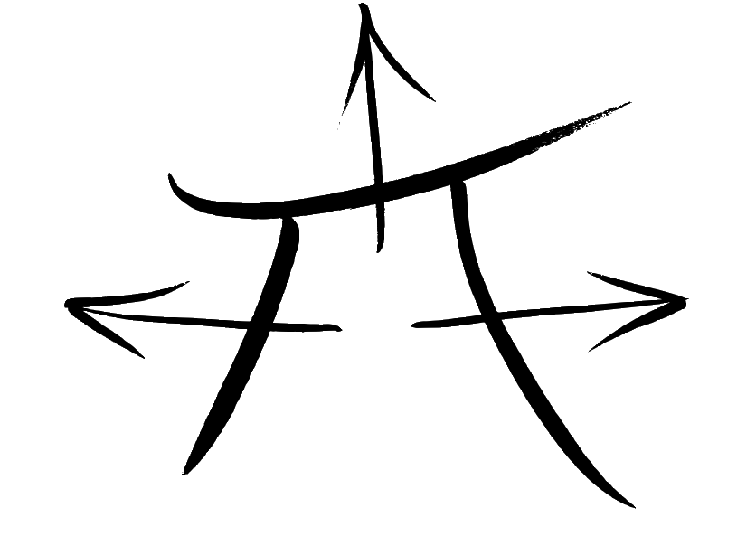
écrit
par un collectif de dix auteurs
sous
la houlette bienveillante de Régis Medina
Version 1.0 – 10 juillet 2013
Collectif
d’auteurs
|
|
web
|
twitter
|
|
|
|
|
|
Philippe Blayo
|
www.barreverte.fr
|
@pblayo
|
|
|
|
|
|
Antoine Contal
|
|
@antoine_contal
|
|
|
|
|
|
Dominique De Premorel
|
|
@domidepremorel
|
|
|
|
|
|
Pierre Jannez
|
|
@pierrejannez
|
|
|
|
|
|
Christophe Keromen
|
www.ckti.com
|
@ckeromen
|
|
|
|
|
|
Régis Medina
|
www.regismedina.com
|
@regis_medina
|
|
|
|
|
|
Sandrine Olivencia
|
www.leanedge.org
|
@sandrineolivenc
|
|
|
|
|
|
Christophe Ordano
|
|
@chrisordano
|
|
|
|
|
|
Raphaël Pierquin
|
www.ut7.fr
|
@perafoo
|
|
|
|
|
|
Bruno Thomas
|
www.barreverte.fr
|
@bam_thomas
|
|
|
|
|
Avant-propos
Les pratiques présentées dans ce guide ouvrent la voie vers une
vision différente de l’organisation. Une vision basée sur une
conviction :
Le changement vers une organisation à la fois plus efficace et plus
respectueuse des personnes est possible. Ce changement naît de la
somme des apprentissages individuels.
L’amélioration continue, en définitive, est celle des compétences
de chaque collaborateur. L’apprentissage devient indissociable du
travail, et le « qui doit faire quoi pour réussir » devient « qui
doit apprendre à faire quoi pour réussir ».
Cette transformation radicale se construit jour après jour, personne
par personne, en allant sur le terrain pour aider chaque
collaborateur à réussir sa journée. Cela amène chacun à créer
plus de valeur pour ses clients, son entreprise et la société, et
trouver ainsi un sens à son travail.
Le chemin vers cet idéal a été tracé par nos prédécesseurs
pendant plusieurs décennies, et consigné sous la forme de principes
et de pratiques qui ont pris le nom de « lean ».
Ce savoir-faire précieux nous a été transmis par Marie-Pia Ignace
et Michael Ballé. Nous vous le transmettons à notre tour, en
espérant qu’il vous apportera les mêmes moments de satisfaction,
les incroyables déclics qui vous feront prendre de la hauteur.
Régis Medina
Sommaire
Inauguration du pont
De "Satisfaire le
client" à "Comprendre son attente"
Pratiques agiles
-
|
Scènes de crime
|
Apparition mystérieuse au cabinet dentaire
Vie et mort d'une idée géniale
La catégorie mystère du projet Condor
|
Principes lean
Premiers pas
Aller plus loin
De "Management Visuel"
à "Visualiser le challenge et les problèmes"
Pratiques agiles
-
|
Scènes de crime
|
Trouvez l'indic !
Le burndown était en rouge
Tous coupables
|
Principes lean
Premiers pas
Aller plus loin
De "L'amélioration
continue" à "Trouver les leviers de l'amélioration"
Pratiques agiles
-
|
Scènes de crime
|
La mise en production qui ne devait pas échouer
Du rififi dans mes sprints
Joue-la courte et précise
|
Principes lean
Premiers pas
Aller plus loin
Conclusion
Aller plus loin
Inauguration
du pont
Depuis plusieurs années, l'esprit et les pratiques agiles vous ont
permis d'améliorer votre satisfaction professionnelle et la
performance de vos équipes.
Mais voilà : il reste encore des sources de frustrations. Les autres
équipes résistent, les managers ne sponsorisent pas vos initiatives
de changement, les clients se plaignent. Il doit bien exister des
moyens d'améliorer les choses, mais comment les trouver ?
En vous entraînant aux pratiques lean sélectionnées dans ce livre,
vous apprendrez à :
trouver les leviers de l'amélioration qui amèneront vos équipes à
un autre niveau de performance ;
résoudre les difficultés que vous rencontrez dans vos relations
avec d'autres équipes ou le management ;
livrer des logiciels qui facilitent la vie des utilisateurs et dont
vous pouvez être fiers.
Ces nouvelles compétences vous apporteront le savoir-faire
nécessaire pour insuffler les changements vitaux au sein des
organisations.
Ce livre se structure autour de trois apprentissages fondamentaux.
Pour chacun d'entre eux, des praticiens agiles vous racontent
comment, en appliquant d'autres pratiques, en adoptant d'autres
postures, en s'entraînant à fonctionner différemment, ils ont
trouvé des solutions simples à des problèmes qui paraissaient
complexes.
Puis des experts décrivent les principes lean mis en œuvre dans les
histoires présentées.
Enfin, des préconisations de premiers pas vous guident vers la mise
en pratique.
Ce livre est né de du désir de praticiens agiles ayant expérimenté
le management lean de partager les richesses surprenantes de ce
nouveau continent.
Nous souhaitons transmettre ce que nous avons appris lors de notre
voyage initiatique. Notre promesse : ça en vaut la peine !
Structure
du livre
Ce guide comprend trois chapitres :
« Comprendre l’attente du client »
« Visualiser le challenge et les
problèmes »
« Trouver les leviers de
l’amélioration »
Chaque chapitre est organisé de la façon
suivante :
Une description des pratiques agiles sur le
thème abordé.
Trois cas réels d’équipes agiles ayant
intégré le management lean dans leurs pratiques. Ils décrivent
leur contexte, les exercices qu’ils appliquent, et ce qu’ils y
gagnent. A la fin de chaque cas, nous analysons et développons les
principes lean mis en œuvre.
Une description des pratiques lean sur le
thème du chapitre.
Les « premiers pas » que nous
proposons de faire pour se lancer.
Des références de lecture pour aller plus
loin.
Bonne lecture et du succès dans vos
expérimentations !
De
Satisfaire le client
à
Comprendre son attente
1 Pratiques
agiles
1.1L'inspiration du manifeste
Le Manifeste agile (http://agilemanifesto.org/)
met le client au centre des préoccupations du développement Agile
de logiciels. Les signataires insistent en particulier sur la
nécessité de collaborer avec le client pour répondre à son
besoin : "La collaboration avec les clients plus que la
négociation contractuelle."
Dans une approche agile, le périmètre du produit n'est pas figé.
L'équipe doit fournir au client toute l'information qui lui permette
d'optimiser la production de valeur en fonction de l'effort fourni.
En contrepartie, le client est co-responsable de l'atteinte de
l'objectif. Il s'implique de manière régulière dans la
redéfinition du périmètre fonctionnel. Scrum préconise ainsi
l'activité de "Product backlog grooming" tout au
long du projet.
Nous retrouvons plusieurs fois mentionné le client dans les douze
principes :
"Notre
plus haute priorité est de satisfaire le client en livrant
rapidement et régulièrement des fonctionnalités à grande valeur
ajoutée."
"Les
processus Agiles exploitent le changement pour donner un avantage
compétitif au client."
"Les
utilisateurs ou leurs représentants et les développeurs doivent
travailler ensemble quotidiennement tout au long du projet."
L'équipe de réalisation et le client adoptent une posture
d'apprentissage à la fois du processus et du produit. Postulat de
l'agilité : le besoin n'est pas complètement identifiable en amont
de la réalisation et de nombreux changements ultérieurs imposeront
à l'ensemble des acteurs de s'adapter en cours de réalisation.
Seule une collaboration étroite entre tous les intervenants
permettra cet apprentissage.
En agilité, satisfaire le client passe par se donner la possibilité
d'expérimenter, puis de tirer des enseignements du résultat des
expériences afin de redéfinir les prochains éléments à produire.
1.2Focus produit
La démarche traditionnelle pré-suppose que le besoin du client peut
être "capturé". Il est clairement identifié, n'évoluera
plus et fait l'objet de spécifications détaillées.
Adoptant une position très différente, les agilistes sont obsédés
par une question : Sommes-nous en train de construire le bon
produit ?
Le focus est ainsi déplacé du projet vers le produit. Scrum ancre
encore davantage cette importance de l'orientation produit en
répartissant les responsabilités anciennement confiées au chef de
projet vers un nouveau triumvirat : équipe - ScrumMaster et
Product Owner.
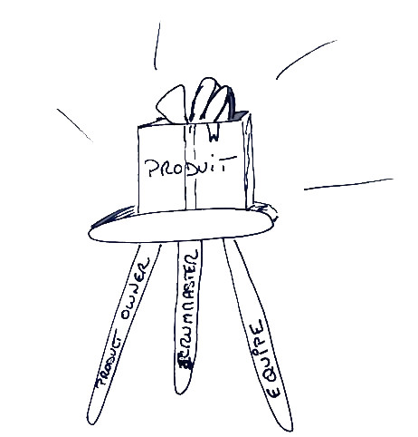
Le Triumvirat Agile
1.3La mise en pratique quotidienne
1.3.1Le bon produit ?
Comme nous l'avons rappelé, l'équipe agile va s'atteler en priorité
au défi de livrer rapidement et régulièrement des fonctionnalités
au client. Cela permettra de confronter son attente à la
réalisation. Ensemble, ils inspectent le travail réalisé, puis
décident des adaptations nécessaires pour se rapprocher de la
satisfaction du besoin.
1.3.2Itérations et approche empirique
Les équipes agiles adoptent ainsi un processus basé sur des
itérations courtes (deux à quatre semaines en Scrum). Elles
mettent en œuvre une approche empirique reposant sur une succession
rapide et régulière d'essais-erreurs-corrections.
1.3.3Spécifier en favorisant la communication
Dans l'objectif de pouvoir livrer rapidement, les exigences
fonctionnelles sont découpées en petits éléments qui permettront
une focalisation sur de petits lots porteurs de valeur.
Pas de spécification détaillée exhaustive en amont, mais une
précision juste à temps (au moment où les fonctions vont être
réalisées) sous forme de conversation entre le représentant de
l'équipe et le client.
Une pratique courante consiste à formaliser ces éléments sous la
forme de User Stories. Ces histoires utilisateur combinent une
concision imposée (doit tenir sur une carte) et la détermination de
tests d'acceptation par le client (doit être testable).
1.3.4Comment maximiser la valeur ?
Pour déterminer le contenu fonctionnel de la prochaine itération,
l'équipe agile va collaborer avec le client en vue de maximiser la
valeur ajoutée au produit. Ensemble, ils vont établir une liste des
prochains éléments à réaliser en précisant l'ordre dans lequel
ces éléments doivent être produits. L'ordre déterminé tient
compte en priorité de la valeur d'un élément et de l'effort
nécessaire à sa réalisation.
E

User Stories
n agilité, l'estimation de l'effort n'est pas l'affaire d'un
seul individu. Les personnes devant réaliser sont les mieux placés
pour estimer. La pratique du Planning Poker permet par
exemple d'obtenir une estimation collective de l'effort de
réalisation, tout en contribuant à diffuser la compréhension du
produit à réaliser.
1.3.5Le logiciel opérationnel
Le manifeste insiste sur l'importance de la production d'un logiciel
opérationnel : "Un logiciel opérationnel est la
principale mesure d’avancement."
L'obtention de ce logiciel opérationnel en fin d'itération permet à
l'ensemble des acteurs de se réunir pour passer en revue les
éléments complètement terminés (conformément à la définition
de terminé établie au préalable avec le client). Cette réunion
permet de vérifier l'adéquation de la production au besoin. Les
participants obtiennent des informations qui seront exploitées lors
de la planification du contenu de la prochaine itération.
1.3.6Le bon
produit et le maximum de valeur ?
Seule la mise à disposition des éléments finalisés auprès des
utilisateurs finaux permettra de déterminer si l'équipe a construit
le bon produit porteur de valeur.
En conséquence, l'objectif ultime de l'équipe agile consiste à se
mettre en mesure de mettre en production immédiatement les éléments
validés lors de la revue (Continuous delivery), éliminant
jusqu'au besoin de définir des versions (releases).
1.4"Nous découvrons comment mieux
développer des logiciels par la pratique"
L
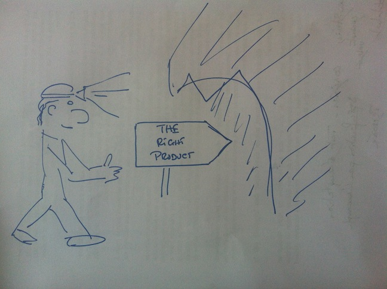
Exploration
du "Right Product"
a communauté agile explore de plus en plus le concept du
Right Product en expérimentant des pratiques très diverses
(inspiration du Lean Startup, notion de Minimal Viable
Product), souvent fondées sur une représentation visuelle des
concepts (Persona, Impact Mapping, Story Mapping,
Empathy Map…).
Elle cherche également à tirer le meilleur parti de la
spécification par l'exemple en allant jusqu'à l'automatisation des
tests fonctionnels (BDD…)
2Scène de
crime : apparition mystérieuse au cabinet dentaire
Un réseau de dentistes cherche à s’informatiser pour saisir les
données de leurs patients, aussi bien dans les établissements
d’accueils spécialisés que dans les centres de soin en ville ou à
l’hôpital.
Lors du recueil des besoins, avec mon équipe de développement, nous
avons découvert que les dentistes sont en fait des geeks qui
aiment les Macs. Nous avons identifié que ce qui est important pour
eux, c’est la facilité de prise en main, la convivialité et
l’utilisation de la souris.
2.1Observation
sur le terrain
Nous réalisons un go&see
en nous rendant sur le terrain, appelé gemba,
pour voir comment travaille un praticien.
Le praticien interroge le patient sur ses antécédents, ses
allergies puis, examiner sa dentition, pendant qu’une autre
personne saisit au fur et à mesure les informations données par le
praticien : « Soin conservateur en 21 !».
C’est sur le gemba que se produit le déclic : notre
hypothèse que l'utilisateur premier était le dentiste se révèle
erronée. Son objectif est de faire dix vacations par jour. Il le
réussit grâce à son assistante qui doit saisir les données au fur
et à mesure de l'examen.
Or, pour aller plus vite, cette assistante n’utilise que les
touches du clavier : pas une minute à perdre pour enchaîner
ces dix vacations.

Contexte d’utilisation du
logiciel
2.2Vérification de l'observation
Ce que nous avons observé change notre perception de l’usage de
cette application.
Une fois rentrés, nous menons une expérimentation en navigant
uniquement avec les tabulations du clavier. C’est une catastrophe !
L’utilisateur est baladé de haut en bas, le faisant tourner en
girouette.

2.3Action corrective
L’équipe change la navigation pour que les tabulations suivent
l’ordre dans lequel l’assistante effectue la saisie.
2.4Le mot de l'assistante : merci Go&See
Sans cette visite au cabinet, là où les choses se passent, nous
n'aurions pas détecté les attentes ergonomiques spécifiques de
l'assistante. Le logiciel l’aide maintenant correctement pour
remplir sa mission.
|
Qu’avons-nous fait :
aller
voir le client, sur son lieu de travail, pour mieux comprendre
son contexte ;
confronter
nos hypothèses avec la réalité du gemba ;
adapter
l’outil à l’usage dans son contexte
puis
retourner sur le terrain pour confirmer la valeur apportée ;
Le résultat :
Nous avons
découvert un nouvel utilisateur et ses attentes ergonomiques, ce
qui nous a amené à adapter le logiciel pour lui en faciliter
l’usage.
Ce que j’ai appris :
Toute hypothèse sur le client doit être confrontée à la
réalité du gemba. C’est une excellente pratique pour
identifier la valeur et les préférences du client.
|
3 Scène de
crime : vie et mort d'une idée géniale
3.1Une idée géniale
Lors
d'un atelier regroupant des créateurs de startups, les
participants les plus courageux « pitchent » leur idée.
L'un d'entre eux a une intuition formidable : créer un guide
touristique international, proposant « les bons plans des
autochtones ». Lorsqu'on on visite Venise l'été, plutôt que
de suer dans un bain de foule sur la place Saint Marc, autant aller
siroter un Spriss (la boisson locale) au comptoir du bacaro
d'une petite place ombragée. Les vénitiens le savent bien. Le
touriste moyen, lui, ne sait pas où trouver ces bons plans.
Très
vite, d'autres participants viennent renforcer notre petite équipe
naissante et la machine s'emballe. On se retrousse les manches, et on
travaille déjà sur les questions fondamentales : Comment
récolte-t-on ces astuces ? Combien peut-on vendre ce guide ?
etc.
Tout
le monde est motivé, prêt à attaquer le développement du site web
et de l'application mobile correspondante.
3.2Aller voir vos clients
L'animateur
intervient en nous demandant d'aller à la rencontre de nos futurs
clients. Le lean appelle cette pratique écouter « la voix du
client »
Notre mission : comprendre comment, aujourd'hui, les touristes
trouvent leur bons plans.
Profitons
de notre situation, en plein cœur de Paris, pour rencontrer des
touristes avides d'astuces de parisiens.
3.3Désillusion
Deux
heures plus tard, nous voilà de retours. Dépités.
Que
s'est-il passé ? L'entrepreneur explique : « Je tombe des nues. On
en a vu, des touristes. Mais aucune réponse sur leur difficulté à
trouver des bons plans locaux, puisqu’ils n’en cherchent pas. Les
plans locaux, ça ne les intéresse pas. Ce qui a de la valeur pour
eux, c'est de trouver le bon chemin pour aller voir la Tour Eiffel. »
3.4La leçon à tirer
L'histoire
de cette idée géniale se termine ici. Mais pas celle de notre
équipe d'entrepreneurs : quelques minutes ont suffi pour
trouver une nouvelle idée géniale. Mais cette fois-ci, en
commençant par une visite terrain
avant de s'emballer.
Voilà
une belle fin, puisqu'au cours de cette histoire, aucun développeur
n'a dû développer un logiciel inutile. L'entrepreneur a pu
consacrer l'énergie économisée à d'autres projets plus
prometteurs.
L'erreur
de l'entrepreneur peut sembler évidente, mais elle est pourtant très
répandue. Son idée, comme toutes les idées, reposait sur des
hypothèses. L'une de ces hypothèses (« les touristes
recherchent les bons plans locaux »), qu'il considérait
pourtant comme une évidence, ne correspond pas à la réalité.
Cette illusion d'évidence, renforcée par le confort du bureau,
retient bien des entrepreneurs, et au moins autant de Product
Owners, d'aller se confronter à la réalité. Ils manquent ainsi
l'opportunité de valider leurs hypothèses sur les besoins des
utilisateurs et les problèmes que ceux-ci rencontrent dans leurs
activités.
Pourtant,
aller à la rencontre de ses utilisateurs, actuels ou futurs,
représente le moyen le plus simple et efficace de bien comprendre la
voix du client.
|
Qu’avons-nous fait :
aller
voir plusieurs touristes, les utilisateurs potentiels ;
confronter
ses hypothèses avec la réalité du terrain.
Le résultat :
Nous avons
compris que la valeur pour cette cible est ailleurs, ce qui a
évité de perdre du temps à développer une application qui ne
rencontre pas son marché.
Ce que j’ai appris :
la
manière la plus efficace de valider des hypothèses sur les
attentes du client est bien d’aller voir les utilisateurs
potentiels
plus vite,
ces hypothèses sont confrontées à la réalité du terrain, plus
nous gagnons du temps sur la création de la valeur.
|
4Scène de
crime : la catégorie mystère du projet Condor
Un opérateur télécom vend aux entreprises une solution de centre
d'appels virtuels. Cette solution est développée par notre équipe
agile de sept personnes. Nous avons hérité d'un code de mauvaise
qualité que nous améliorons progressivement. Cependant, nous sommes
confrontés à environ deux signalisations
par jour de nos utilisateurs finaux. Cela provoque une tension avec
le management, notre commanditaire est furieux, et les relations avec
les exploitants sont difficiles.
4.1Catégorisation des incidents
Je décide de prendre le cas au sérieux. Pour cela, je commence par
lire les tickets d'incidents dans l'outil de ticketing du SAV.
Il y a beaucoup de types de tickets différents. Je les compte et les
catégorise. Cela constitue un bulletin de santé que j'affiche sur
le mur à l'entrée de notre War Room.
Bulletin de santé condor

4.2Analyse du problème
Les trois catégories les plus volumineuses sont :
formation utilisateur, les utilisateurs ne comprennent pas comment
fonctionne l'application ;
réseau et plateforme, pas directement liée à des défauts
logiciel ;
mystère, nous ne savons pas identifier l'origine de la
signalisation.
Première surprise, le grand gagnant est la catégorie mystère.
Deuxième surprise, il y a finalement une minorité de signalisations
liées à la qualité logicielle. Par ailleurs, je me rends compte
qu'il y a peu de réponses à ces tickets : je trouve des
informations de type « formation utilisateur » et des
demandes d'évolution.
4.3Identifier l'origine
Désarçonnés par le flou de ces tickets mystère, nous décidons
d'avancer sur notre problème en nous donnant les moyens d'identifier
l'origine des prochaines signalisations. Nous faisons un travail
important d'amélioration des logs de l'application. Les
récapitulatifs quotidiens remontant par mail les erreurs et les
warnings contiennent plusieurs centaines de lignes
hétérogènes. Nous donnons un format standard à ces logs, en
décrivant les informations devant y figurer (client, identifiant
d'appel, raison de l'erreur avec un élément de contexte).
Nous nous rendons compte qu'il est difficile de suivre un appel
téléphonique entier car certaines logs sont sur les SVI (Système
Vocal Interactif) et d'autres sont sur les serveurs d'application.
Nous développons un script d'agrégation pour consolider
chronologiquement ces sources différentes.
Nous faisons alors diminuer drastiquement la catégorie mystère de
30% à 5%.
4.4Gestion du timeout
Maintenant que nous voyons plus clair, un motif important de
signalisation semble liée au protocole de communication avec le
serveur du réseau télécom qui est basé sur de l'UDP. Rien ne
garantit dans ce protocole que l'information ne soit pas perdue. Dans
un certain nombre de cas, la perte d'un événement entraîne le
blocage des appelants sur une file d'attente du SVI. Il faut attendre
le timeout du SVI qui est de 30 mn. C'est inacceptable pour
l'équipe. Nous décidons de mettre en place un mécanisme de gestion
de timeout. Cela demande d'ajouter une couche de simulation du
temps pour la compatibilité avec les tests automatiques.
4.5Point d'étape
L'équipe est satisfaite car elle a fait diminuer les signalisations
liées à la perte d'appel. Elle évite à des personnes de payer 30
minutes avant de se faire raccrocher au nez.
Comme certains tickets sont toujours inexpliqués, nous décidons
d'envoyer un binôme en observation chez le client ayant le trafic le
plus élevé.
4.6Observation chez le client
Accueillis dans une atmosphère tendue, nous allons observer les
agents du centre d'appel avec leur superviseur.
Sous nos yeux, une opératrice double-clique sur le bouton de pause.
Cela a pour effet de demander une pause et de sortir de pause
immédiatement. Surpris, nous lui demandons pourquoi elle fait cette
opération. Elle nous explique qu'elle repasse ainsi devant ses
collègues dans la file d'attribution des appels, afin de prendre
plus d'appels. Le superviseur nous explique que les agents sont
intéressés au nombre d'appels traités. Sidérés, nous comprenons
alors les incidents de distribution d'appels remontés par les
autres, étonnés que leur collègue leur passe devant.
Devant nous, un autre agent prend un appel et souhaite appuyer sur
une touche de fonction pour afficher une information de leur outil
de CRM. Ce faisant, sa main effleure le bouton « raccrocher »
et elle perd l'appel sans comprendre pourquoi. Nous venons de
résoudre un autre ticket non reproductible. Mais pas seulement. Le
superviseur qui nous accompagne a assisté à la scène et comprend
que le problème ne vient pas de l'application, mais de l'ergonomie
des postes de travail. Il fait rehausser les postes téléphoniques
pour qu'ils soient plus éloignés des claviers.
Plus tard dans l'après-midi, une opératrice redirige un appel vers
l'hôtel de Roissy. Une personne de l'équipe de développement qui
nous assiste à distance précise que l'appel est perdu. Nous allons
voir la configuration de l'application et réalisons que le numéro
de l'hôtel est erroné. Voilà l'explication des erreurs de type
RouteSelectFailure. Nous avions longtemps privilégié la fausse
piste des problèmes de standard chez le client.
Nous partons dans un climat plus détendu : les agents sont contents
d'avoir été écoutés et nous sommes soulagés d'avoir supprimé
trois causes de signalisation.
|
Qu’avons-nous fait :
commencé par visualiser notre problème ;
protégé le client en écoutant et en prenant au sérieux ses
plaintes ;
nous rendre sur le gemba en lisant les tickets de support
puis en allant voir l'utilisateur en action.
Le résultat :
Cela s'est traduit par une baisse drastique de signalisations en
passant de deux par jour à une par semaine. Nous avons également
ajouté une couche de simulation du temps qui nous a servi
ultérieurement.
Ce que j’ai appris :
Aller sur le gemba est inconfortable, notamment chez un client
insatisfait, mais d'une grande richesse d'apprentissage.
Paradoxalement, c'est aussi un gain de motivation.
En sortant du périmètre de l'équipe pour aller voir le client,
nous avons pu aboutir à la résolution définitive d'un grand
nombre de problèmes qui paraissaient hors de notre portée.
|
5Principes lean
5.1Comprendre le besoin profond du client
L’expérience montre un écart fréquent entre ce que le client
exprime et ce qui le satisfait réellement. Cette difficulté
s’explique de plusieurs manières :
Il lui est difficile de formuler les exigences du logiciel sans y
ajouter ses propres préférences ou interprétations.
La demande le met en situation de concepteur de logiciels - un
métier pointu auquel il n’est souvent pas formé.
Le lean propose un ensemble de pratiques et principes efficaces pour
cibler les besoins réels du client et affiner la compréhension de
ses préférences.
Tout d’abord, dans un contexte de développement logiciel, il faut
considérer trois grandes familles de clients :
L’utilisateur final, celui à qui va profiter directement le
logiciel au quotidien.
Le commanditaire, qui paie la prestation de développement et en
attend un retour économique. Sa satisfaction dépend de celle de
l’utilisateur final, mais aussi d’autres paramètres qui
s’évaluent au niveau de l’entreprise.
Les équipes en aval de l’équipe de développement qui vont
tester, exploiter, et fournir du support.
Chacun de ces clients a ses propres attentes, qu’il faut identifier
et satisfaire. Le lean offre une structure pour guider cette
exploration, basée sur cinq axes :
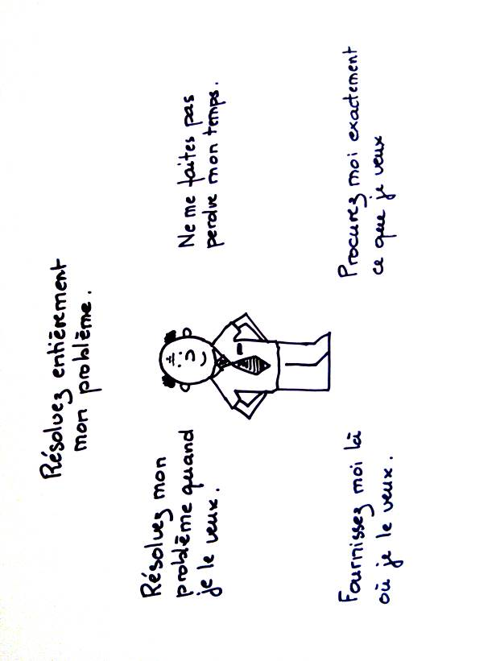
Les cinq attentes du client
Les pratiques qui suivent constituent un bon point de départ pour
entamer ce travail de détective.
5.2Se faire sa propre opinion en allant observer le client sur le
terrain

Le véritable besoin du client ne se déniche pas dans une salle de
réunion. Il faut aller le trouver sur le terrain, là où l’action
se passe – un lieu que les praticiens du lean appellent le
« gemba ». Dans un contexte agile, il s’agit de
l’endroit où l’utilisateur sera amené à utiliser le logiciel.
Simple d’apparence, cette observation recèle toutefois un piège :
le « go&see » peut se transformer rapidement en
« go&talk », bien souvent à l’initiative de la
personne observée. Quelques points doivent être respectés pour
éviter cet écueil :
Expliquer à la personne observée l’objectif et les modalités de
l’observation, en précisant qu’il s’agit d’une observation
et non d’une interview. Si nécessaire, il est possible de
demander à cette personne de « penser à voix haute »
pour mieux comprendre ce qu’elle cherche à faire.
Observer le plus longtemps possible sans parler.
Répondre poliment à ses questions et l’inviter à reprendre
l’observation.
Une bonne observation doit apporter des éléments de réponse à
deux questions :
Les deux exemples « Apparition mystérieuse au cabinet
dentaire » et « Vie et mort d'une idée géniale »
illustrent les prises de conscience importantes que provoquent
habituellement des observations réussies.
En termes lean, ces observations amènent l’équipe à observer le
processus de son client : où se trouve la valeur à ses yeux et
quels sont les gaspillages à éliminer.
Avec les équipes en aval, l’exercice est quasiment identique, mais
l’attention porte essentiellement sur l’identification des
gaspillages que les livraisons de l’équipe agile génèrent chez
ces autres équipes. L’équipe agile met-elle ces dernières en
condition de réussir ?
Dans le cas du commanditaire, l’exercice consiste à comprendre
comment il mesure le succès et les quelques points qui sont
véritablement essentiels pour lui. Comme pour l’utilisateur, le
« go&see » n’est pas un « go&talk ».
L’observateur découvre par exemple que le commanditaire est
sensible à telle ligne précise dans un reporting comportant des
centaines de page.
5.3Définir le problème à résoudre et la façon de mesurer le
succès
Au-delà des fonctionnalités élémentaires, le lean pose la
question du problème global auquel le projet doit apporter une
solution pour satisfaire ses utilisateurs et commanditaires.
Une fois le problème posé, il s’agit de définir la façon dont
il sera possible de vérifier que le projet l’a bien résolu.
L’équipe se dote d’indicateurs qui reflètent ce succès.
Quelques exemples :
Améliorer la qualité : taux d’erreur commis par les
utilisateurs, volume d’incidents
Augmenter les ventes : taux d’ajout d’articles dans un
panier d’un site de e-commerce
Augmenter la notoriété : nombre de « J’aime »
sur Facebook, nombre de tweets
Réduire les délais : le temps pour acheter un billet de train, le
temps pour approuver une demande de crédit
Eliminer des gaspillages : productivité des utilisateurs
Réduire les irritants : taux de perte des visiteurs sur un
site web
Cette démarche est directement basée sur la technique du
Plan-Do-Check-Act (PDCA) présentée au chapitre « De
"L'amélioration continue" à "Trouver les leviers de
l'amélioration" ».
5.4Expérimenter pour valider ses préférences
Chaque fonctionnalité est porteuse d’incertitude. Il se peut que
:
malgré ses observations sur le terrain, l’équipe ait mal compris
l’attente des clients,
la fonctionnalité ne résolve pas le problème dans le contexte de
certains utilisateurs,
la fonctionnalité crée de nouveaux problèmes insoupçonnés.
Pour éviter cela, il est nécessaire de procéder à de nouvelles
observations terrain après les livraisons. Il s’agit de la phase
de « Check » de la résolution de projet, qui peut être
appliquée à la fin de chaque itération.
5.5Prendre très au sérieux chaque réclamation client
Chacune des réclamations des clients est une opportunité
d’apprentissage, car elle pointe soit sur un élément que l’équipe
n’a pas compris, soit sur une faille dans son fonctionnement.
En pratique, le travail sur les réclamations se traduit par la
recherche de la cause racine du problème qui a amené le client à
se plaindre. Ceci conduit l’équipe à :
mieux comprendre le contexte de son client,
revoir ses convictions sur son analyse.
trouver des solutions pour éliminer la cause racine et éviter que
cela se reproduise,
Cette activité d’analyse des réclamations repose également sur
la démarche de résolution de problèmes. L’exemple « La
catégorie mystère du projet Condor » présente une équipe
qui choisit de traiter chaque signalisation utilisateur comme un
problème de qualité.
5.6Valeur et gaspillages
Tout ce travail d’investigation et d’analyse a pour objectif de
trouver la valeur pour le client. C’est seulement une fois qu’elle
est clarifiée qu’apparaissent clairement les obstacles : les
gaspillages qui occasionnent des pertes de temps pour les
utilisateurs ou ceux qui construisent le logiciel.
Les gaspillages s’observent à de nombreux niveaux :
dans l’activité de l’utilisateur – il faut alors comprendre
comment les éliminer en améliorant le logiciel ou le support
dans l’activité de traitement du logiciel – installation,
exploitation, sauvegarde, etc.
dans l’activité de développement du logiciel.
Les pratiques lean ont pour objet d’impliquer l’ensemble des
collaborateurs de l’entreprise dans la recherche permanente de
création de valeur pour les clients, en utilisant l’élimination
des gaspillages comme autant d’opportunités de libérer le temps
précieux de ces collaborateurs. Deux de ces pratiques principales
sont présentées dans les sections suivantes.
6Premiers pas
Pour renforcer votre compréhension des attentes de vos clients, nous
proposons ces exercices :
6.1Allez observer le client sur le terrain
Pour votre projet actuel, allez voir trois utilisateurs distincts sur
leurs lieux de travail
Pour chacun des utilisateurs, observez pour comprendre :
Qu’apprenez-vous de nouveau sur leur contexte ?
6.2Clarifiez le problème et mesurez le succès
Pour votre projet actuel, menez l’investigation pour répondre
à ces questions :
Quel est le bénéfice attendu du logiciel ? Est-ce qu’il
permet de résoudre complètement le problème du client ?
Exprimez-le en termes de délais, qualité et coût pour
l’utilisateur et pour le commanditaire.
6.3Expérimentez pour valider les préférences du client
Prenez les stories livrées de votre dernière itération et
posez-vous ces questions :
Allez mener l’observation. Qu’avez-vous appris ? Quels sont
les impacts ?
6.4Regardez les réclamations
Prenez les trois dernières réclamations client. Pour chacune, menez
ces investigations :
Quelle est la cause racine du problème ?
Qu’apprenez-vous sur le contexte et les attentes de votre
client/utilisateur ?
Comment pouvez-vous vous assurer que ce problème ne survienne à
nouveau ?
7Aller plus loin
7.1Le lean au service du client
Jim WOMACK et Dan JONES – Edition Vuibert
De
Management visuel
à
Visualiser le challenge
et les
problèmes
8 Les pratiques
agiles
8.1Favoriser le travail en équipe
Dans le bureau d'une équipe de développeurs agiles, personne ne
s'étonne de voir les murs couverts de post-its et de posters
dessinés à la main.
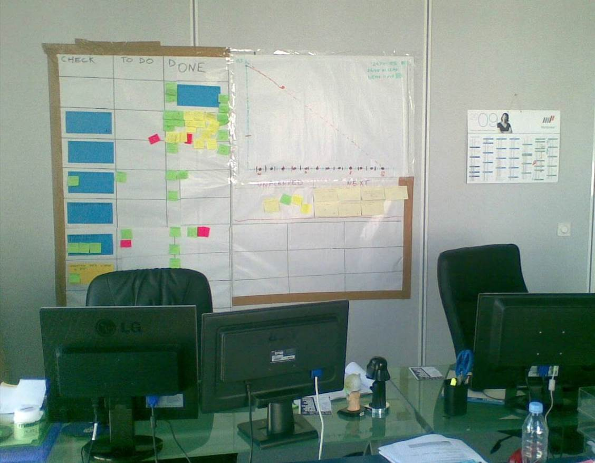
Un affichage mural (radiateur
d’information) dans un bureau de développeurs
Le principe est simple : l'utilisation de l'espace visuel permet
d'améliorer la qualité et la quantité d'information échangée au
sein de l'équipe et avec ceux qui l'entourent.
Un projet de développement logiciel en équipe se confronte à la
fois à un besoin de communication intense et aux limites de la
communication verbale, qu'elle soit formelle ou informelle. Les
méthodes classiques ont recours à des outils de gestion de projet
informatisés ou à des fichiers sur des répertoires partagés.
Solutions trop lourdes ou déshumanisées pour le manifeste agile qui
invite à privilégier « les individus et leurs interactions
plus que les processus et les outils ». L’affichage mural est
alors la réponse adaptée pour la communication interne et externe.
8.2Encourager l'auto-organisation
En interne, ces éléments visuels sont des outils avec lesquels les
développeurs interagissent et à l'aide desquels ils se
synchronisent entre eux. Par exemple, sur un task board, on
fait avancer le post-it représentant une tâche au fur et à
mesure de sa progression. Cela facilite aussi l’intégration d'un
nouvel arrivant.
Cette clarté sur ce qu’il y a à faire et sur les objectifs
contribue à l’émergence de l’auto-organisation. Ce n’est plus
le chef de projet qui affecte les tâches, mais l’équipe
elle-même.
Vis-à-vis de l’extérieur, les indicateurs, volontairement
simples, donnent une vision synthétique de l’état du projet et
évitent le reporting coûteux et inefficace car non partagé.
8.3Quelques exemples
La culture agile regorge d'exemples que les équipes de développement
peuvent reprendre à leur propre compte, comme le montrent les
spécimens suivants.

tableau kanban
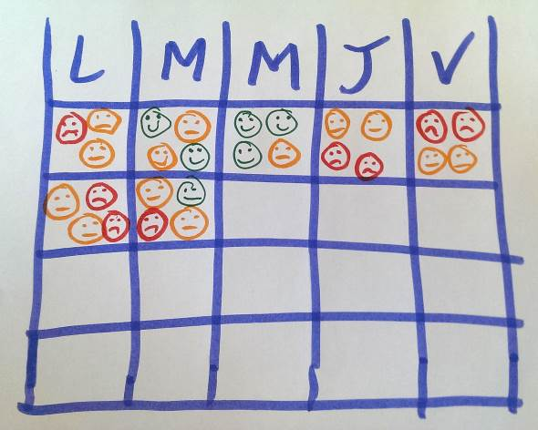
Niko niko

Burndown chart
Les équipes plus avancées commencent à créer des affiches sur
mesure pour répondre à leurs problématiques spécifiques.

Un poster sur-mesure
Puisque la technologie utilisée (papier, feutres et traits à main
levée) est rudimentaire, il est facile et rapide d'adapter les
affichages au besoin émergent et d’expérimenter.
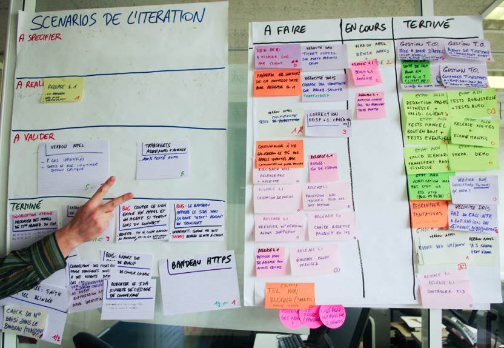
Exempls d’affichage d’une
équipe créative
Les rétrospectives sont des moments privilégiés pour faire évoluer
les affichages, pour en créer et en supprimer. Tous les formats sont
bons, tant que les éléments affichés restent utiles et utilisés.
8.4Une pratique quotidienne
Tous les jours, l'équipe se réunit devant le
tableau d'avancement des tâches pour une courte réunion
d'inspection et d'adaptation. Le support visuel matérialise les
informations orales fournies rituellement par chacun des membres de
l'équipe :
depuis hier, j'ai terminé…
d'ici demain, je pense terminer…
voici ce qui pourrait constituer un obstacle au fait de terminer…
8.5Une pratique efficace et évolutive
Les équipes agiles en posture d'amélioration
continue sont en expérimentation permanente sur leur management
visuel. Aujourd'hui, pour aller plus loin elles ont recours de plus
en plus à l'approche kanban : matérialisation des limites sur le
travail en cours, définition de classes de service…
9Scène de crime : trouver l’indic !
Le contexte
Une enseigne de la grande distribution s’adresse à l’agence web
que je dirige pour mettre en ligne son offre traiteur de fin d’année.
Le site doit offrir la possibilité aux clients de construire une
liste de courses qu’ils pourront utiliser ensuite en magasin pour
commander leurs produits. Le site ne sera accessible que cinq
semaines par an à l’occasion des fêtes.
L’année suivante, suite au succès de l’opération et à une
demande de plus en plus importante, l’enseigne décide d’ajouter
le paiement en ligne. Le niveau de performance demandé est très
élevé : une fiabilité sur la commande de 100% et un taux
contractuel de disponibilité au-delà de 95%. Je dois donc offrir à
mon client un service de maintenance, cependant mes équipes agiles
actuelles n’ont aucun cadre de travail pour assurer ce nouveau type
de prestation.
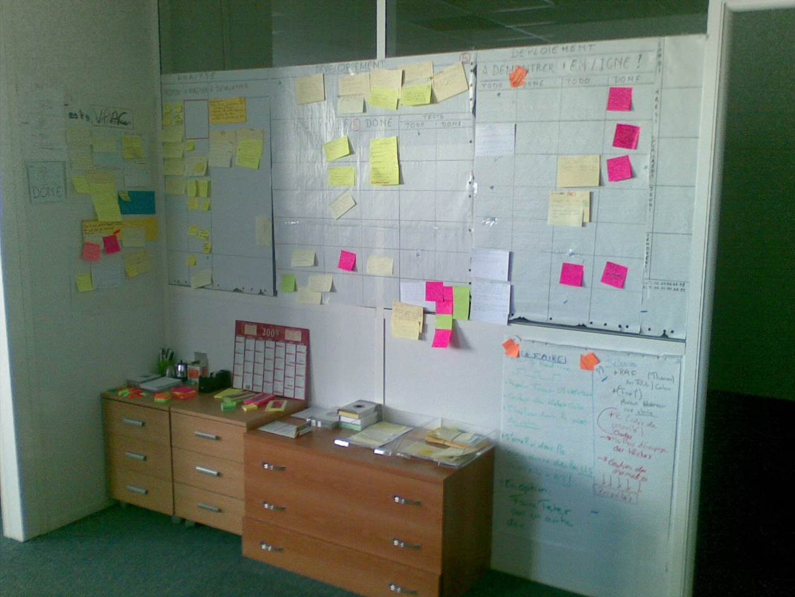
Radiateur d’informations
existant pour gérer les projets web
Pendant les 3 années suivantes, nous réussissons au prix de gros
efforts à tenir nos engagements. En effet, nous devons développer
de nouveaux projets pour d’autres clients tout en assurant la
maintenance de ce site. Chaque année l’histoire se répète,
l’équipe semble toujours confrontée aux mêmes problèmes. Les
sprints sont perturbés par les actions de maintenance et les
problèmes de fonctionnement de l’application. Nous ne capitalisons
pas sur ce que nous avons appris les années précédentes. Les
pénalités en cas de non-respect des engagements peuvent mettre
l’entreprise en danger. La pression est donc très importante,
d’autant que je suis incapable de savoir à tout moment si la
situation est sous contrôle ou pas.
La démarche
La question qui se pose est de savoir comment être certain que nous
sommes en train de réussir. C’est à dire assurer un service de
maintenance de qualité tout en réduisant l’impact de cette
activité sur le développement des autres projets.
La première étape consiste à comprendre ce qui est vraiment
important pour le client pendant la durée de vie du site
d’e-commerce. Je veux savoir sur quoi je dois porter une attention
particulière afin de satisfaire totalement mon client. Je décide de
ne pas décider à sa place et de lui poser la question. Pour cela,
je m’appuie sur l’outil « Voix Du Client »
.
Il ressort de ce questionnement trois points clefs :
Les
dates d’ouverture et de fermeture du service. Le site doit
être accessible seulement entre le 19 novembre et le 26 décembre,
période d’ouverture annoncée par l’enseigne. Le client
investit dans une campagne de communication (TV, radio, publicité
sur le lieu de vente, etc.). Il communique fortement sur la date
d’ouverture du service qui doit être opérationnel au moment
fixé. Pour la fermeture, il est très important d’arrêter le
service pour chaque magasin aux heures définies par le client. Dans
le cas contraire, un magasin pourrait être dans l’incapacité
d’honorer les commandes passées. La réputation de l’enseigne
est donc en jeu.
L’engagement
sur la prise de commande du client du magasin. 100% des
commandes prises doivent être honorées.
La
disponibilité du site. Le site doit être accessible 100% du
temps sur la période d’ouverture. Même si contractuellement le
site doit avoir une disponibilité de 95%, le client attend une
disponibilité totale du service.
A partir de ce constat, je construis avec l’équipe un ensemble
d’indicateurs clefs, afin de nous concentrer sur le véritable
challenge
permettant de satisfaire pleinement notre client. Assisté par ces
indicateurs, je veux connaître chaque jour l’état de la situation
pour m’aider à décider.
Les indicateurs se présentent comme suit :
 ��
��
Nous affichons et faisons vivre ces indicateurs dans notre open
space. La situation est rendue visible. Chaque fois qu’il y a
un problème
(exemple : plainte client car le service est lent -> 8
secondes pour passer commande au lieu de 2 secondes), les indicateurs
sont mis à jour. Tous les matins, nous faisons un point sur la
situation. Si un problème est survenu la veille, c’est l’occasion
pour nous de partager et d’apprendre sur les actions menées.
Notre management visuel est organisé de la manière suivante :
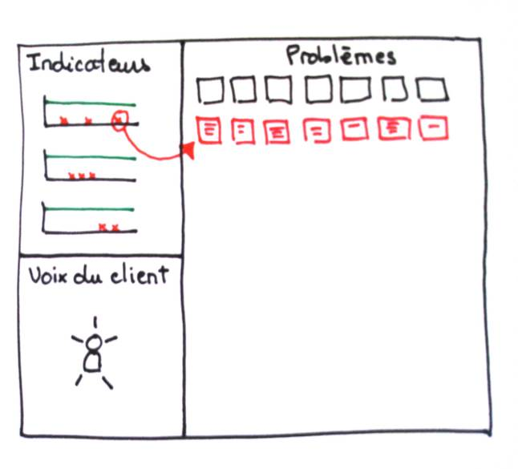��
L'exploitation de ces informations me permet aujourd’hui de juger
avec l’équipe de l’importance des problèmes. L’équipe
travaille plus sereinement. Elle est capable de répondre aux
exigences du client le plus rapidement possible. Les projets sont
moins perturbés et l’équipe délivre plus de fonctionnalités par
sprint. D’autre part, cette démarche qui améliore la qualité du
service nous permet de renforcer la relation de confiance avec notre
client qui reconduit chaque année notre partenariat.
Qu’avons-nous fait :
Comprendre
ensemble :
Voir
ensemble :
Agir
ensemble :
Le
résultat :
Un
site e.commerce avec un haut niveau de fiabilité
Des
projets livrés plus vite, car moins de perturbations extérieures
Ce que j’ai appris :
En qualifiant ensemble la nature des problèmes, nous utilisons au
mieux les compétences de chacun pour résoudre plus rapidement les
problèmes. Peu importe la forme des premiers indicateurs construits
tant qu’ils montrent la cible et les problèmes, ils s’affineront
dans le temps pour mieux correspondre à l’attente du client.
10Scène de crime : tous coupables !
Contexte
Suite à la fusion de plusieurs organismes, une grande société de
services se voit confier la réalisation d’un nouveau système
unifié de gestion des dossiers des cotisants. Les enjeux de mise en
service de ce nouveau système sont critiques :
Le suivi comptable a mis à jour un écart considérable entre les
cotisations, les remboursements et l'encours. Il faut très
rapidement clarifier la situation, puis la corriger.
De nombreux cotisants font face à de très longs délais de
traitement de leurs dossiers.
Après une première phase de six mois, le premier lot s’est soldé
par un échec : l’équipe a livré avec un retard de plusieurs
semaines, hors budget, un produit non conforme aux attentes du
client.
Cette situation se traduit par une crise dans l'équipe de
réalisation : le directeur de projet et le chef de projet sont
remplacés, la moitié de l’équipe demande à changer d’activité.
J'interviens comme coach agile auprès de l'équipe comportant une
vingtaine de personnes.
Visualiser le challenge
L'équipe doit se mettre en capacité de produire le prochain lot
dans un délai de trois mois, sans retard, en assurant une qualité
acceptable du point de vue du client final. Elle doit également
parvenir à livrer des lots intermédiaires toutes les deux semaines
pour rassurer le client.
Ce challenge
se traduit tout d'abord par l'affichage d'un objectif de production
pour la première itération :
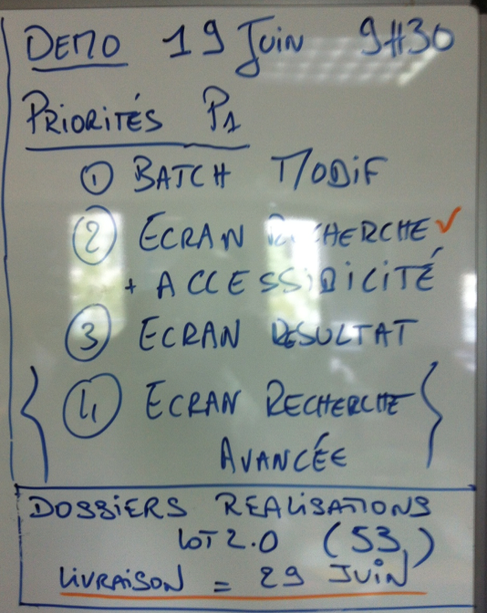
Objectif de production
L'équipe analyse les principales étapes de son flux de production,
puis représente son activité sous la forme d’un tableau visuel.

Tableau représentant le flux
de production
L'enjeu de l'itération en cours consiste à sortir toutes les pièces
présentes sur le tableau.
Révéler les problèmes
Problème principal : les tâches n’arrivent pas jusqu’à la
dernière colonne.
Depuis plusieurs semaines, l'équipe bute sur une somme croissante
d'obstacles bloquants sans arriver à s'organiser pour les surmonter.
La frustration qui en résulte se transforme progressivement en
antagonisme envers la cellule d'analyse fonctionnelle. Celle-ci,
délocalisée auprès du client final, est rendue responsable du
blocage. L'équipe de réalisation lui reproche de laisser
s'accumuler les demandes d'informations, sans les traiter dans un
temps acceptable.
Les premières réunions quotidiennes confirment que la majorité des
développeurs sont en attente de clarification sur des questions
d'ordre fonctionnel. Ces demandes sont transmises par l'intermédiaire
d'un outil électronique, mais la plupart restent indéfiniment sans
réponse. L'équipe réalise que l'outil ne lui permet pas
d'appréhender la situation.
Pour y voir plus clair, elle décide de rendre visibles ces obstacles
sur son management visuel. Au cours de ce travail d'analyse, elle
fait une découverte surprenante : là où l'équipe technique voit
15 questions en cours, l'équipe fonctionnelle n'en voit de son côté
que 2.
La cause racine
du problème se trouve dans la variabilité individuelle
d’interprétation du processus. Chacun saisit la demande à sa
manière, puis, déléguant la responsabilité au système, ne se
préoccupe plus du suivi du processus de résolution. En particulier,
les tickets sur lesquels le service destinataire est mal renseigné,
ne sont pas traités correctement. Ils demeurent en l’état dans le
système.
Tout d’abord, l'équipe enrichit son management visuel,
en rendant visibles, pour chaque tâche, les obstacles (questions
bloquantes en cours) sous la forme de post-its rouges :

Affichage des obstacles sur les
tâches
Ensuite, l'équipe met au point un standard de rédaction d'une fiche
de demande. Je passe voir chaque collaborateur pour le former à la
bonne façon de faire. De plus, l’émetteur de la demande devient
responsable des actions de suivi.

Standard de définition d’une
demande
Les obstacles sont matérialisés et suivis sur un tableau dédié :

Tableau de suivi des obstacles
Les réunions quotidiennes, qui étaient auparavant centrées sur les
tâches, font maintenant une large place au traitement des obstacles
en cours. Chaque jour, un point est effectué sur les obstacles non
levés. Les fiches des obstacles non résolus sont déplacées en
fonction de leur niveau d’urgence (voir tableau de suivi des
obstacles).
Dès qu’un obstacle est levé, sa fiche est déplacée vers un
espace spécifique où il demeure jusqu’au lendemain. Cela permet à
un autre équipier, dont une tâche serait en attente de la même
demande, de savoir qu’il peut reprendre son traitement.

Panneau des obstacles résolus
Deux semaines après cette découverte, les questions en attente de
réponse de la part de la cellule d'analyse fonctionnelle ont toutes
été traitées. L'équipe peut vérifier visuellement au quotidien
que cette équipe n'est pas source de blocage de leur processus, les
tensions sont apaisées, les relations fluidifiées.
L'équipe a appris à gérer les obstacles, ce qui lui a permis de
retrouver sa capacité à produire. Une bonne partie des tâches en
attente ont pu avancer dans les étapes suivantes du processus.

Qu’avons-nous fait :
Comprendre
ensemble :
Voir
ensemble :
Agir
ensemble :
Le résultat :
Les obstacles ont été levés ce qui à permis à l’équipe de
sortir ses tâches à l’heure
Ce que j’ai appris :
L’équipe communique et travaille plus efficacement avec les
analystes fonctionnels
11Scène de crime : le burdown était rouge
11.1Contexte
Comme dans beaucoup d'équipes agiles nous avons un burndown chart
d'itération :
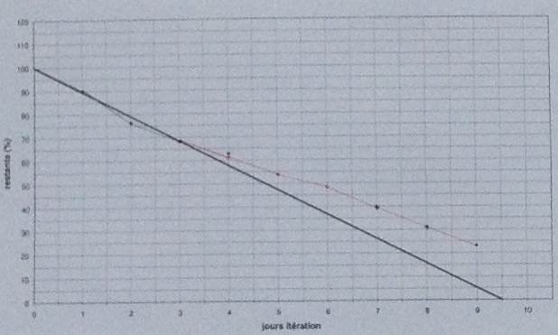
Nous rencontrons un problème
de tenue des délais qui se matérialise sprint après sprint par un
reste à faire de 10 à 20% en fin de sprint :

11.2Recherche de cause
Peut-être que nous ne consacrons pas le temps prévu initialement à
réaliser nos sprints. Certains membres de l'équipe interviennent en
effet sur plusieurs activités (management, réunions transverses…).
En tant que Team Leader, je n'échappe pas à cet
éparpillement.
11.3Enrichissement du management visuel
Pour clarifier la situation, nous enrichissons notre management
visuel en ajoutant un graphique des jours consommés, copie
quasi-conforme de notre burndown chart d'itération.

Notre hypothèse se confirme : une partie de l'équipe n'a pas
consacré à l'itération autant de jours qu'elle le pensait.
L'équipe croyait disposer d'une capacité de 100 jours avant
l'itération, mais n'a pu en fournir réellement que 80.
11.4Action : suivi des écarts
Il faut maintenant agir. Je trace, sprint après sprint, la
différence entre les jours consommés et les jours planifiés.
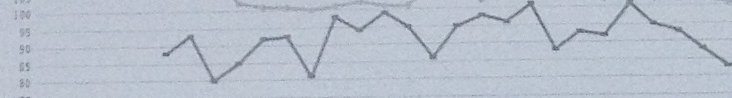
Sur les 24 derniers sprints, j'observe une forte variabilité. Je
pense que les membres de l'équipe n'ont aucun moyen de détecter un
écart en cours de sprint.
11.5Consommé individuel
J’en discute avec l'équipe et nous décidons de tracer jour après
jour le consommé de chaque personne.
En début de sprint, nous imprimons un graphique qui montre pour
chaque personne le nombre de jours qu'elle a annoncé en sprint
planning. Durant chaque daily scrum meeting, un
développeur remplit les lignes. Quand Romain dit "je suis
intervenu sur telle tâche toute la journée", le développeur
surligne en fluo une journée supplémentaire consommée sur la ligne
de Romain.
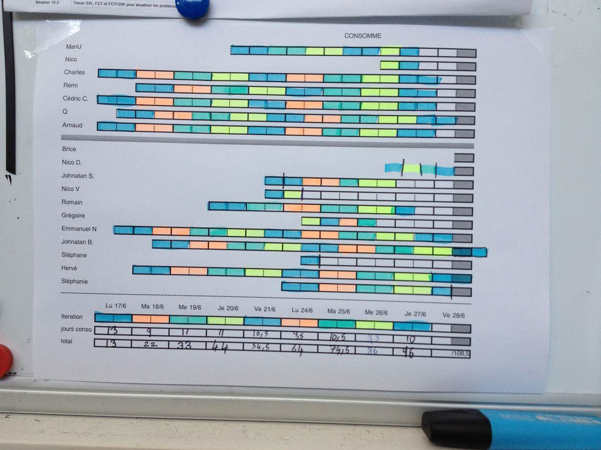
Ce suivi permet d'alerter Romain: "attention, il ne reste que 2
jours et il te reste 1,5 jours à consacrer au sprint".
11.6L'information affichée est exploitée
Chaque membre de l'équipe est maintenant en mesure de suivre au jour
le jour un éventuel écart de son implication dans le sprint. Par
exemple, si une réunion transverse imprévue m'est proposée, je
choisis d'y participer ou pas en connaissant pleinement son impact
sur le sprint.
Le reste à faire en fin d’itération, qui était totalement
imprédictible et chaotique devient d’une exceptionnelle
stabilité :
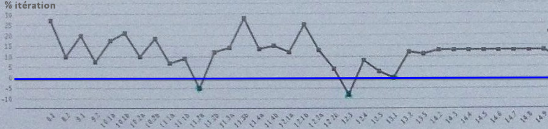
Par contre, nous n’arrivons pas encore à tenir 100% de nos
engagements du sprint. En effet les tâches de développement
s’accumulent dans la case « A valider », dernière
étape de notre kanban et l’équipe des spécifications ne les
valide pas toutes avant la fin du sprint.
Et les deux équipes se marièrent et eurent beaucoup de stories
finies en fin de sprint. Les équipes de spécification et de
développement décident de fusionner leur management visuel et leur
daily meeting. Les débuts sont difficiles, mais à partir du
sprint 15.1, ils réussissent à s’améliorer drastiquement en se
focalisant sur les stories à valider plutôt que sur de nouvelles
spécifications :
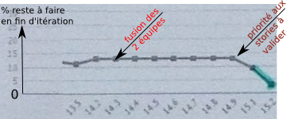
Qu’avons-nous fait :
Comprendre
ensemble :
Voir
ensemble :
Mesurer
les jours consommés pour faire apparaître un delta par rapport à
l’estimation faite en début de sprint
Un
visuel permettant à chacun de savoir, à tout moment, combien de
jours il lui reste pour terminer les tâches sur lesquelles il
s’est engagé
Agir
ensemble :
Se
poser la question « est-ce qu’il me reste assez de temps pour
tenir mes engagements du sprint
Planifier
sa journée en fonction (ex : privilégier le développement
plutôt des tâches à moindre valeur ajoutée telle qu’une
réunion)
Le résultat :
Nous livrons le même volume de fonctionnalités d’itération en
itération (environ 90%), ce qui permet à chaque membre de l’équipe
de mieux planifier son prochain sprint.
Nos indicateurs nous ont permis de valider ensemble la réussite
d’une action collective.
Ce que j’ai appris :
Laisser l’équipe trouver d’elle-même les solutions à ses
problème
12Principes
lean
12.1Qu'est-ce que le management visuel lean apporte à une équipe
agile ?
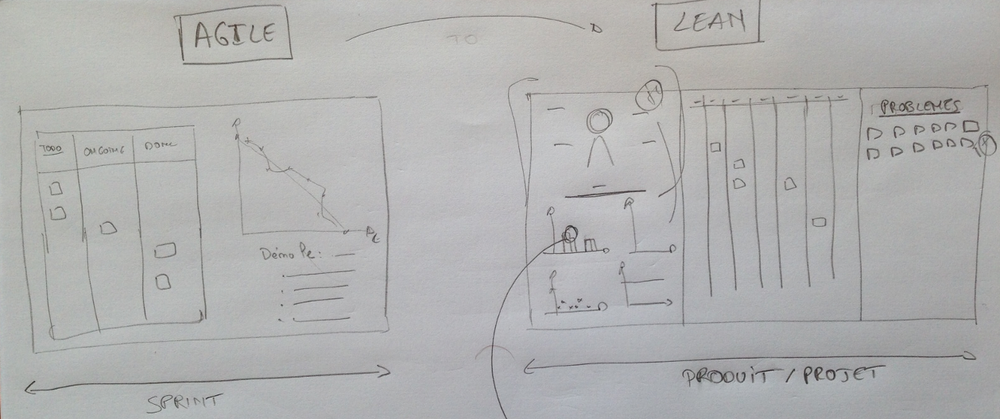
Du management visuel agile au
management visuel lean
Le management visuel lean permet de franchir un
palier sur trois sujets :
Identifier de manière très précise où se
situent les problèmes que l’équipe doit attaquer pour améliorer
aussi bien le produit que leurs conditions de travail. Ceci est très
clair dans l’exemple « Trouver l’indic ». Le
management visuel renvoie à l’équipe plusieurs signaux qui
permettent d’agir sur les bons sujets : volume important des
demandes de maintenance et retards de livraison des projets. Ceci va
encourager l’équipe à aller à la rencontre de ses clients pour
mieux comprendre les difficultés rencontrées.
Collaborer avec les autres équipes de
manière efficace. Dans l’exemple « Tous coupables »,
l’équipe technique blâme les analystes et inversement, et les
choses n’avancent pas. Ils visualisent le problème ensemble, et
en très peu de temps, ils arrivent à se mettre d’accord sur une
solution simple pour débloquer la situation.
Communiquer avec vos managers sur un plan
d’égalité et ainsi mieux vous faire entendre.
12.2Les objectifs
Le management visuel fournit en temps réel l’information et le
feedback objectif nécessaires à la compréhension de
l’activité de l’équipe. Il lui donne les moyens de répondre à
chaque instant à la question : « Sommes-nous en train de
réussir notre journée ? ».
Comme chaque outil lean, le management visuel est un outil
d’apprentissage. Il permet aux collaborateurs de devenir des
experts dans leur métier par la résolution des problèmes qui
émergent.
Il est basé sur trois axes :
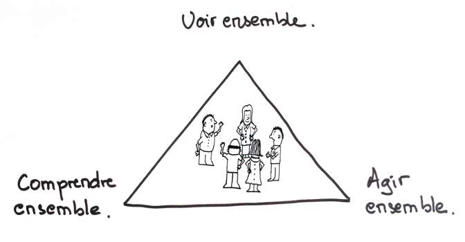
12.3Comprendre ensemble
La construction et l’utilisation du management visuel amènent
l’équipe à développer une compréhension commune de :
l’attente de ses clients ;
son challenge et sa propre performance ;
son processus de développement ;
les rôles et les compétences de chacun ;
12.3.1Le
client
L’équipe commence par identifier clairement ses clients.
Dans un deuxième temps, elle définit les besoins et les critères
de satisfaction de ses clients : où est la valeur dans ce qu’elle
délivre ? Dans quelles conditions faut-il lui délivrer
(délais, coûts) ?
Dans l’exemple « Trouvez l’indic ! », les
développeurs sont allés à la rencontre de leurs clients (service
marketing et DSI de leur commanditaire). Ils ont réalisé que leur
contrat ne reflétait pas leurs réelles attentes. S’ils
respectaient les 95% de disponibilité du site, pas de pénalité
pour l’équipe, mais une image affectée pour le client.
12.3.2Le
challenge et la performance
L’équipe définit sa « condition cible » et la traduit
sous la forme d’indicateurs de performance. Ces derniers montrent
la qualité de ce que l’équipe produit, dans quels délais et avec
quelle productivité pour satisfaire le client. Doivent donc se
retrouver les indicateurs suivants :
Qualité du service ou produit livré (est-ce que l’équipe a
réussi à livrer la bonne fonctionnalité du premier coup ?)
Respect des délais de livraison demandés par le client (et
pas uniquement négociés) ou le stock (le volume des demandes
client dans le backlog que l’équipe n’a pas encore pu
traiter). Charge à l’équipe de s’améliorer pour s’approcher
de l’attente client. Dans l’exemple « le burndown était
rouge », les développeurs veulent à tout prix se battre pour
respecter leur engagement de délais sur le sprint (90% livré au
lieu de 100%) et vont jusqu’à mesurer leur propre temps consommé
pour y arriver.
La productivité (indicateur clé pour suivre l’amélioration de
la capacité de l’équipe)
La satisfaction client (l’équipe peut avoir l’impression que
tout va bien alors que le client n’est pas entièrement satisfait)
12.3.3Le
processus
L’équipe définit clairement les activités à valeur ajoutée
pour le client et les étapes par lesquelles elle doit passer pour
livrer le service ou le produit requis. L’objectif est de s’aligner
et de rester focalisé sur ce qui est important pour le client, tout
en facilitant le travail de chaque collaborateur.
12.3.4L’équipe
Chaque personne doit être capable d’exprimer clairement son rôle
et sa place dans l’équipe. Ceci lui permet d’interagir avec elle
sans ambiguïté.
L’équipe affiche aussi une matrice de compétences de tous ses
membres, ainsi qu’un programme de formation, l’objectif de
développement des compétences étant clair pour chacun.
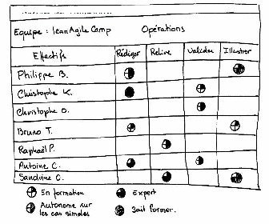
12.4Voir ensemble
Dès que l’équipe est claire sur la direction à prendre et
qu’elle est prête à mesurer sa performance au jour le jour, elle
doit rendre visible ce qu’elle est en train de produire. Le but est
de voir les différentes unités de production (ex : des tâches,
des tickets, des fonctionnalités) avancer dans le processus.
Pour cela, l’équipe met en place un système lui permettant de
visualiser le flux de ses activités comprenant l’objectif du jour
et la distribution des tâches, ainsi que la performance. L’objectif
est d’être alerté immédiatement en cas d’anomalie afin de
réagir rapidement.
12.4.1Flux
d’activité
Typiquement, les équipes agiles utilisent des taskboards pour
organiser leurs sprints et visualiser le flux des tâches.
Le lean va plus loin et ajoute des « bacs rouges », une
manière visuelle de représenter les obstacles que les développeurs
rencontrent et qui les empêchent d’avancer et de travailler sans à
coup. L’exemple « Tous coupables » montre très bien ce
principe : les développeurs ajoutent des étiquettes rouges sur
leurs tâches lorsqu’il leur manque une information pour avancer.
Ils se donnent des objectifs quotidiens pour lever ces obstacles et
partagent la solution avec leurs équipiers pour en tirer des leçons.
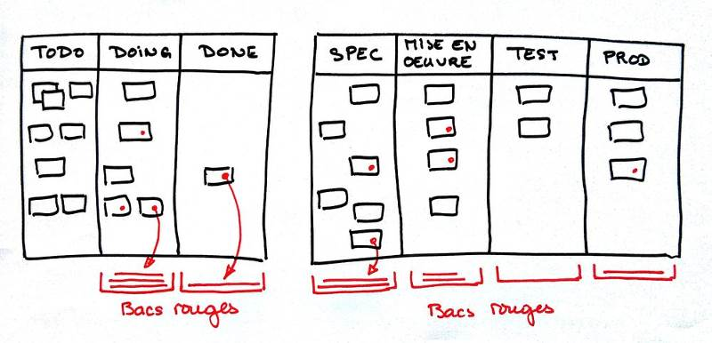
Dans certains contextes spécifiques, il peut être utile de mettre
en place un visuel un peu différent. Ci-dessous, deux possibilités :
Un visuel « gros volumes » : l’équipe se donne
des objectifs chiffrés et vérifie plusieurs fois par jour si elle
les atteint ou pas (exemple : création et exécution de tests
fonctionnels).
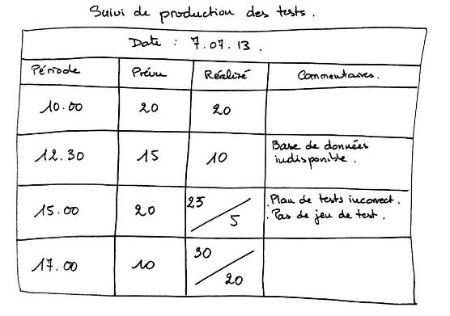
Un visuel « physique » : lorsqu’il est nécessaire
de voir ce qui est produit sur papier. Ce visuel peut être utilisé,
par exemple, dans le cadre d’un projet de conception de
documentation technique.
L’image ci-dessous représente trois bannettes :
une bannette contenant des pages rédigées par Julie qui demande
une relecture à Germain (« à traiter »),
une deuxième bannette contenant les pages pour lesquelles Julie
attend des renseignements ou un feu-vert (« suspendu »)
une troisième bannette (« les bacs rouges ») contenant
les pages qui comportent des problèmes à résoudre immédiatement
pour débloquer Julie.

12.4.2Le
mur de la performance
L’équipe construit ses indicateurs de performance pour savoir à
tout moment si elle répond bien aux attentes de ses clients. Elle
les met à jour à la main quotidiennement et y annote les « pics »
et les « vallées » pour expliquer les hausses et les
baisses inattendues. Un bon indicateur montre la tendance dans le
temps et une cible afin de faire émerger les écarts de performance,
ce qui forme la définition d’un « problème »
.
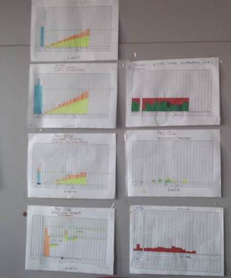
Deux exemples d’indicateurs :
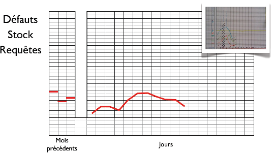
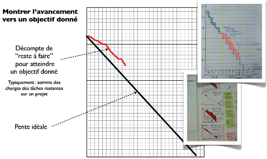
Liste des problèmes :
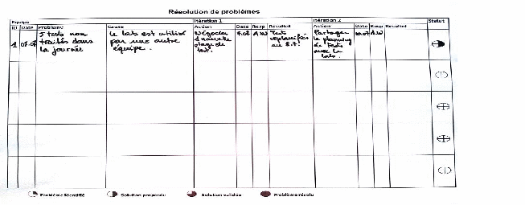
12.5Agir ensemble
Le management visuel favorise l’auto-organisation de l’équipe
afin qu’elle puisse réagir rapidement aux problèmes et adapter
son fonctionnement pour faire de la résolution de problèmes. Il
permet ainsi à l’équipe de prendre ses propres décisions sur
l’objectif opérationnel du jour, son organisation et les solutions
à mettre en place pour travailler plus sereinement. Dans l’exemple
« Tous coupables », la réunion d’équipe quotidienne
n’est plus seulement une opportunité de parler de ses tâches,
mais de partager ses problèmes. On se réorganise pour donner à
l’équipe l’opportunité de résoudre les problèmes bloquants
sans perturber le bon déroulement du sprint et surcharger les
développeurs.
L’équipe met en évidence différents types de problèmes grâce à
l’alimentation quotidienne du système de management visuel. Du
plus simple, qui nécessite une action rapide de type « just do
it » au plus complexe nécessitant une réflexion plus
profonde. Dans l’exemple « le burndown était rouge »,
l’équipe ne se décourage pas et continue de chercher la cause
racine de leur problème lié au non-respect des délais.
L’équipe consigne les problèmes au fur et à mesure qu’ils
apparaissent sur le mur et les traite les uns après les autres.
Suivant la nature du problème, l’équipe peut se reconfigurer et
affecter certains de ses membres spécifiquement à son analyse et sa
résolution.
Le sujet de la résolution de problèmes sera détaillé dans le
prochain chapitre, « Les leviers de l’amélioration ».
13Premiers pas
13.1Comprendre ensemble
Allez voir
votre client, votre manager et votre équipe pour comprendre leurs
critères de succès :
Après avoir
rencontré, interrogé, observé vos clients, écrivez sur papier la
liste de ces critères. Ils définissent votre challenge.
13.2Voir ensemble
Mettez-vous
devant votre management visuel et voyez avec l’ensemble de
l’équipe :
Où est
le client ? Est-ce que le challenge est bien représenté ?
Prenez un
des critères de succès de la liste que vous avez établie. Comment
est-elle traduite concrètement dans le management visuel ?
L’objectif est-il clair pour chacun ?
Prenez
chacun des indicateurs au mur. Chacun sait-il ce qu’il doit
faire pour y contribuer ?
Les
pièces à produire sont-elles visibles ?
Reprenez et
ré-itérez sur la construction de votre management visuel.
13.3Agir ensemble
Tous les
jours, posez-vous ces questions :
En ce
moment, en s’appuyant uniquement sur ce que montre le management
visuel, l’équipe est-elle en train de réussir sa journée ?
Les
obstacles sont-ils visibles ?
Les
problèmes que l’équipe est en train de résoudre sont-ils
visibles ? L’amélioration est-elle visible ?
Quelle est la dernière chose que vous avez apprise grâce à votre
management visuel ?
14Aller plus loin
14.1The Visual Factory
Michel GREIF – Edition Productivity Press
|
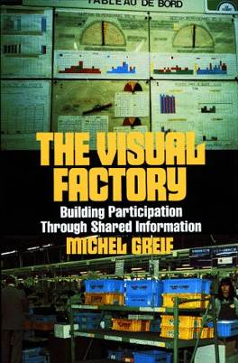
Version française disponible en ebook
|
Aller à l'essentiel :
Chapitre
5 « The Visual Production Control » pour des exemples
de management visuel
Chapitre 6 « Process
Indicators » pour comprendre les indicateurs de performance
à ne pas confondre avec des indicateurs d’activité
|
14.2Creating a Lean Culture
David MANN – Edition CRC Press
|
|
Shingo Prize : la plus haute distinction des livres lean
Aller à l'essentiel :
Chapitre 4 « Visual Controls »
pour retrouver des exemples de management visuel
|
De
L’amélioration continue
à
Trouver les leviers de l’amélioration
15Les pratiques agiles
15.1Au plus profond de la culture agile
Des principes favorisant l'identification des actions d'amélioration
sont embarqués au plus profond de la culture agile.
Par exemple :
Le développement itératif : Répéter les mêmes activités
permet d'améliorer sa pratique.
La livraison fréquente : En s'assurant que les
fonctionnalités développées sont remises rapidement entre les
mains du client, l’agilité crée les conditions pour qu'une
conversation ait lieu avec lui. S'il n'est pas satisfait, l’équipe
cherche un moyen d'améliorer la situation.
Les temps rétrospectifs : En réservant du temps pour
réfléchir, l'équipe crée l'espace nécessaire pour le choix
d'actions d'améliorations.
15.2Les domaines privilégiés d'amélioration
Au fil des années, la communauté agile s'est constituée un riche
catalogue de pratiques favorisant l'amélioration.
Le mouvement agile a été initié par des développeurs qui
voulaient rompre avec des méthodes de projet, des environnements de
collaboration peu propices à l'épanouissement, et des pratiques
d'ingénierie inefficientes. C'est la raison pour laquelle on peut
trouver des pratiques agiles dans ces différents domaines. En voici
quelques exemples significatifs.
15.2.1L'organisation du travail
Comme le mécanicien qui sait repérer les anomalies dans le bruit
répétitif du moteur, l'équipe identifie les effets des changements
introduits par leurs décisions d'une itération à l'autre. Elle
sait reconnaitre des motifs récurrents, sait réagir et gérer le
stress par le rythme du travail. Cette idée est reproduite de
manière fractale jusqu'aux gestes du développement : la
construction d'un programme est aussi une résolution successive de
micro-problèmes.

15.2.2Les
trucs de geeks
Le refactoring, les tests automatiques sont des leviers
techniques d'amélioration du produit logiciel. Le développement
piloté par les tests est un bon moyen de construire un design
émergeant, garant de l'évolutivité du code. Cela aura pour effet
de créer des degrés de liberté (fontionnelles, techniques) et
assurera la faculté de l'équipe à délivrer des évolutions à un
rythme constant. Le refactoring est aussi une manière pour
l'équipe de polir son métier, de se l'approprier, le rendre plus
habitable (Cf software craftmanship).
Le binômage constitue également un levier. Par exemple, en
associant un développeur d'une grande expérience métier avec un
développeur nouveau dans l'équipe : le développeur nouveau avec
son oeil neuf peut apporter de la hauteur dans les solutions conçues
et son expertise technique. L'expert métier peut apporter au novice
ses explications des concepts et techniques du projet.
15.2.3La communication
interpersonnelle
La qualité de la communication représente un axe majeur
d'amélioration. Pour exploiter les bénéfices de la communication
orale, il est conseillé de regrouper les postes de développement
dans le même bureau. Quand la situation l'exige, l'équipe peut
également augmenter la bande passante auprès de son client, par
exemple en l'invitant plus fréquemment à des réunions de travail.
La construction d'équipe apparaît également comme un domaine
d'action privilégié. Les coaches puisent dans plusieurs domaines
des sciences humaines et du coaching d'équipe (Virginia Satir, Ecole
de Palo Alto, Core protocols, psychologie sociale) afin de guider les
équipes dans l'amélioration de leur efficacité.
15.3Trouver des leviers sur mesure
Le travail en équipe auto organisée constitue un des principes
fondamentaux de la culture agile ("The best architectures,
requirements, and designs emerge from self-organizing teams").
Aussi, la source privilégiée de leviers d'amélioration réside
dans l'équipe même.
La rétrospective, qu'elle ait pour objet une itération ou un projet
entier, est le moment privilégié pour analyser la situation et
choisir un levier d'amélioration. Chaque levier consiste à
introduire ou ajuster une pratique issue du catalogue cité
précédemment, ou une action concoctée sur mesure.
L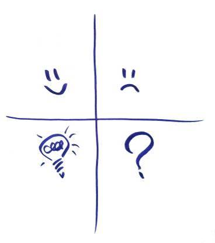a
diversité des points de vue de chaque individu est le gage du
potentiel d'amélioration de l'équipe. Celle-ci doit s'efforcer
d'exploiter au mieux cette richesse en partageant les informations
pertinentes dont chacun a pu disposer individuellement. Une fois ces
informations partagées, nombre de techniques facilitent
l'identification des problèmes à résoudre et la mise au point
d'actions de résolution, mais toujours en s'appuyant sur le
collectif.
Quelle qu'en soit la source d'inspiration et la méthode
d'accouchement, une bonne action d’amélioration réunit les
caractéristiques suivantes :
- elle est prometteuse : Le bénéfice attendu important. Ce
bénéfice est évalué selon les critères propres aux participants.
- à la portée des participants : Ceux-ci sont en mesure de
mettre en œuvre avec les moyens à leur disposition ; ceci exclut
les actions trop coûteuse ou en dehors du champ d'action.
- elle remporte l'adhésion : C'est l’action qui fait
consensus parmi les participants qui est choisie.
16Scène de crime : la mise en production qui ne devait pas
échouer
16.1L'odeur du napalm au petit matin
Un opérateur majeur propose un service grand public de télévision
et vidéo à la demande. Il sert 40 millions d’accès par mois
grâce à 250 000 lignes de code Java, une plateforme
Linux/Apache/Tomcat/Mysql et un bus de données erlang RabbitMQ. Ce
service est développé par mon équipe de 8 développeurs et
exploité par 3 ingénieurs système. Cette équipe de développement
pratique scrum et XP depuis 4 ans.
Un matin, je retrouve l’équipe système avec des cernes, en
intervention depuis 5 h du matin. Le service web grand public est
techniquement opérationnel, mais inaccessible. Malgré un rollback
effectué sans problème, le monitoring du bus de données et
des consommateurs des messages de statistiques est toujours rouge,
signalant un incident. C’est pourquoi l’équipe système n’ose
pas rouvrir le service au public.
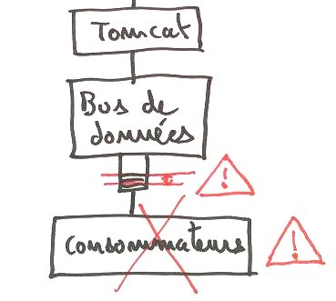
Je vais voir l’ingénieur système pour l’aider à rétablir le
service au plus tôt.
Nous essayons de relancer les consommateurs sans succès. Je tente de
lancer un consommateur à la main sans passer par le script
d’exploitation. Je découvre une erreur (NullPointerException).
Elle indique que l’exécutable n’a pas trouvé son fichier de
configuration. Le lien symbolique vers le répertoire des fichiers
spécifiques à l’environnement de production n’existe pas.
L’ingénieur système le recrée immédiatement à la main. Il
redémarre les consommateurs et une minute plus tard le monitoring
repasse au vert. Le service est ré-ouvert et le trafic reprend.
16.2Une situation client dramatique
Où en sommes-nous ? La version cible n’est toujours pas en
production. Le pôle exploitation client est passé en incident
majeur (plus de 2h d’interruption de service + retour arrière). Il
veut passer en niveau de vigilance maximale sur la
prochaine mise en production. C’est à dire au minimum avec 19
jours de préavis, avec présentation des changements, solutions de
retour-arrière.
De son côté, le pôle marketing-fonctionnel veut publier dans deux
semaines une évolution d’une importance inégalée depuis 7 ans.
Pour assurer cette grosse évolution, il faut effectuer 4 mises en
production. En comptant 19 jours de préavis pour chacune, il
faudrait 3 mois au lieu des 2 semaines voulues par le marketing.
16.3Les 5 pourquoi
Une fois le service rétabli, je pars mener une enquête minutieuse,
dans l’esprit des "5 pourquoi" du lean
pour éviter la réapparition de l’incident.
Pourquoi le lien symbolique n’a pas été créé ? Le script shell
d’installation maintenu par l’équipe système n’a pas créé
ce lien symbolique.
Pourquoi ? Ce script est composé de deux instructions :
une vérification de monitoring et la création du lien
symbolique. L’instruction de vérification échoue et interrompt
toute l’exécution.
Pourquoi ? Cette instruction se réfère à un chemin
inexistant.
Pourquoi ? Ce script a été mal modifié lors d’une mise à
jour du système de monitoring.
Une cause profonde a
été identifiée : une maladresse lors d’un changement
technique.
16.3.1L’échec
des procédures qualité
Pourtant, dans mon entreprise, il existe un standard pour se prémunir
de ce genre de maladresse, à savoir la répétition systématique en
environnement de pré-production.
Pourquoi la répétition en pré-production n’a-t-elle pas révélé
ce dysfonctionnement ? Les scripts shell d’installation
qui s’y trouvent sont différents de ceux en production : ils
n’ont pas été modifiés.
Une autre cause profonde a été identifiée : un écart
entre les environnements.
16.3.2Comment
fatiguer son ingénieur système ?
Une autre question subsiste : pourquoi un ingénieur système,
pourtant talentueux, a-t-il dû attendre l’arrivée d’un
développeur pour recréer un lien symbolique ?
Réponse : lors de l’incident, aucune trace n’apparaissait,
ni dans les logs système, ni dans la console.
Pourquoi ? Les logs de l’application partaient vers la sortie
standard (à cause du lien symbolique manquant) et le script
d’exploitation ignorait la sortie standard.

16.4Prévenir plutôt que guérir
L’arbre de causalité
indique trois causes racines, en dehors de notre champ d’action.

Nous modifions notre code pour qu’il adresse à l’ingénieur
système un message explicite en cas de dysfonctionnement. En terme
lean, nous ajoutons un andon.
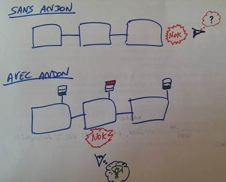
Comme nous avons la main sur le script d’exploitation, nous le
modifions pour rediriger la sortie standard, jusque-là ignorée,
vers les logs systèmes. Nous ajoutons également la capture de
l’exception NullPointerException de manière à informer
l’exploitant du problème sur la sortie standard. Pour ne rien
laisser au hasard, nous testons ce message auprès de l’ingénieur
système pour s’assurer de sa compréhensibilité.
Prochaines investigations à mener :
Je suis content d’avoir compris ce qui s’était vraiment passé
et d’avoir trouvé une contre-mesure économe qui empêchera le
même désastre de se reproduire.
J’ai la satisfaction d’avoir posé la première pierre du long
chemin vers le rétablissement de la confiance avec notre client.
Qu’avons-nous
fait :
Protéger
immédiatement le client, avant d’entamer le cycle
Plan-Do-Check-Act ;
Trouver
les causes racines, avec le 5-pourquoi ;
Ajouter
un andon dans la chaîne de déploiement applicative pour que
l’incident ne se reproduise pas.
Le résultat :
Notre application est devenue plus exploitable. Elle met un peu plus
notre équipe système en situation de réussir.
Nous avons identifié des sources de variabilité précises, qui vont
permettre une investigation plus poussée.
Ce que j’ai appris :
Je croyais être impuissant face à un incident qui relevait
complètement d’une autre équipe, alors qu’en fait, j’ai pu
apporter une contribution qui, à elle seule, évitera de nouveaux
incidents.
En tant que développeur, j’ai appris qu’il faut que j’anticipe
aussi le cas où le système de log n’arrive pas à s’initialiser.
17Scène de crime : du rififi dans mes sprints
Chaque année, mon équipe agile doit assurer la maintenance d’un
site web marchand en plus de son activité de développement. Cette
activité ponctuelle perturbe les sprints en cours.
L’équipe met tout d'abord en place un management visuel pour :
comprendre
la situation : les besoins du client et ce à quoi elle doit
faire attention lors de la maintenance ;
voir la
nature des dysfonctionnements ;
être
capable de réagir en fonction de la criticité des problèmes.
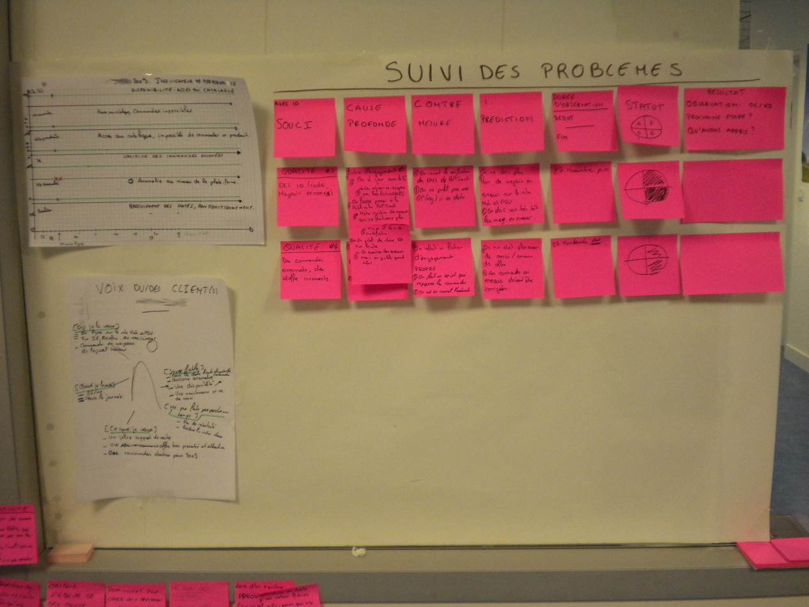
17.1Du management visuel au Plan-Do-Check-Act (PDCA)
Même si la situation semble s’améliorer, des problèmes déjà
corrigés reviennent d’année en année (espace disque insuffisant,
fiabilité des statistiques, magasins qui ne présentent pas
l’offre…). L’équipe apprend à réagir rapidement aux bons
problèmes en protégeant le client par des actions immédiates.
Malheureusement, celles-ci ne sont pas pérennes.
Comment s’y prendre pour que la situation s’améliore et que les
problèmes identifiés soient corrigés définitivement ?
Je décide de mettre en œuvre la technique du Plan-Do-Check-Act
(PDCA).
Sur le management visuel, chaque problème figure sous forme d'un
post-it.
Un membre de l’équipe est chargé d’analyser le
problème en profondeur en utilisant la technique des "5
pourquoi".
Cette technique simple permet de trouver la cause racine du problème.
Ensuite, l'équipier propose une contre-mesure pour supprimer cette
cause. Il détermine également un indicateur approprié à la
vérification de l'efficacité de la contre-mesure. Suivant le
résultat de la vérification, les procédures sont adaptées pour
intégrer la nouvelle pratique.
17.2Le service de prise de commande ne répond pas dans les temps.
Le service de prise de commande répond en 8 secondes au lieu de 2
secondes. Le système de monitoring remonte une alerte sur la console
de supervision. Une première investigation identifie la cause
principale : un des serveurs dédiés à la prise de commande
n’a plus suffisamment d’espace disque.
L’équipe recherche sur le disque la partition incriminée. Elle
découvre que le répertoire "/tmp" est plein.
Action immédiate : L’équipe vide le répertoire et
tout revient dans l’ordre.
Plan :
Impact du problème sur le client final :
le temps de la prise de commande est rallongé de 6 secondes.
il y a un risque que le problème se produise aussi sur les autres
machines, empêchant complètement la prise de commande.
L’équipe applique la technique des "5 pourquoi" :
Le serveur ne répond pas.
? le répertoire "/tmp" est plein.
? les log binaires prennent toute la place. Ce n’est pas normal
que les logs
binaires soient présents
sur cette machine.
? la configuration du serveur n’est pas correcte
? la procédure d’installation ne précise pas qu’il ne faut
pas
activer les
logs binaires sur les serveurs en question
Do :
Action 1 : supprimer tous les logs binaires de tous les serveurs
dédiés à la prise de commande.
L'analyse de la cause racine a permis d'identifier une seconde
action qui devrait permettre d'éviter la réapparition du problème.
Action 2 : désactiver les logs binaires sur tous les serveurs
dédiés à la prise de commande.
Check :
Il n’y a plus de log binaires dans le répertoire "/tmp"
et l’espace disque demeure suffisant pour que l’application
fonctionne correctement.
Adjust :
Après vérification du résultat des actions, la procédure
d’installation des serveurs de prise de commande est mise à jour.
17.3Résultats
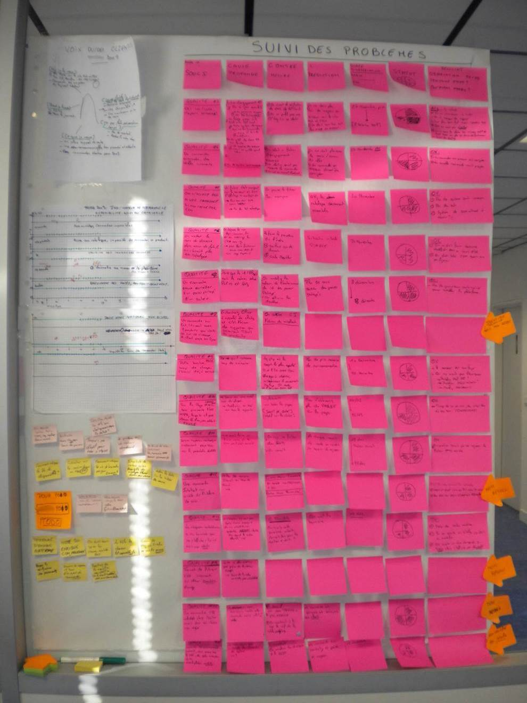
La pratique du PLAN-DO-CHECK-ACT est appliquée de manière
systématique à tous les problèmes rencontrés. Elle a permis
d’améliorer les performances d’année en année. Le nombre de
problèmes a diminué de 37% en deux ans pendant que le
trafic augmentait de 40% et que le nombre de fonctionnalités
augmentait d’une dizaine chaque année.
La diminution du nombre de problèmes a permis de limiter l’impact
de la maintenance sur la vélocité de l’équipe de développement
tout en garantissant la satisfaction de notre client.
Au-delà des bénéfices pour ce projet précis, j’observe que
l’enchaînement des cycles Plan-Do-Check-Act fait monter en
compétence mon équipe et que les autres projets se passent mieux.

Qu’avons-nous fait :
Protéger
immédiatement le client, avant d’entamer le cycle
Plan-Do-Check-Act ;
Trouver
les causes racines, avec le 5-pourquoi ;
Effectuer
une action corrective à la racine ;
Pérenniser
une action d’amélioration en modifiant un standard.
Le résultat :
Nous avons diminué significativement le volume d’incidents.
Nous avons un standard corrigé qui nous protège de la récurrence.
Ce que j’ai appris :
Mon équipe a acquis des compétences en administration système.
J’ai désormais une expérience personnelle de l’alignement de
l’entreprise sur la satisfaction client par le développement des
compétences.
18Scène de crime : joue-la courte et précise
Notre
client est mécontent car l'équipe de développement dont je fais
partie met deux fois plus de temps qu’il ne souhaite sur les gros
projets.
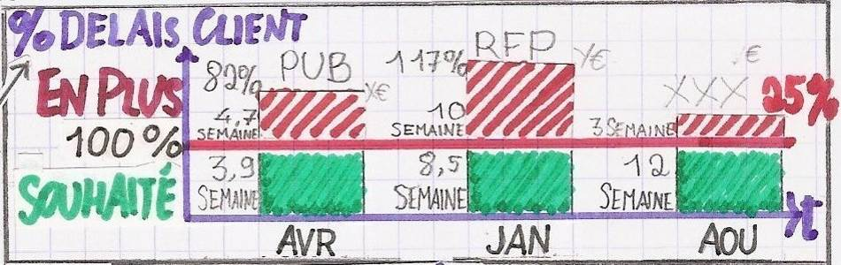
18.1Première hypothèse
Pour
comprendre où gagner du temps, le ScrumMaster propose de visualiser
le problème. Il met une feuille au mur, chaque développeur qui
constate un frein ou un blocage, le mentionne sur cet emplacement
avec une estimation du temps perdu. Avec beaucoup de discipline,
tous les développeurs jouent le jeu.
Au
moment où nous compilons les données, nous tombons de haut :
nous étions convaincus de trouver un gisement d’amélioration,
mais la mesure révèle moins de 2h perdues par semaine. Ce n’est
presque rien comparé aux 60 jours hommes de chaque sprint.
Je
réalise que ce n’est pas surprenant. Les gens sont sensibles à ce
qui sort de l’ordinaire, mais ne remarquent pas les freins dont ils
ont l’habitude.
18.2Deuxième hypothèse
Mon
ScrumMaster a une nouvelle intuition : l’équipe passe trop de
temps à faire du refactoring. Je trouve pour ma part que
l’écriture des tests d’acceptance automatisés est chronophage.
Qui a raison ?
Cela
mérite une deuxième expérimentation.
Pour
éclaircir ce mystère, pendant plusieurs sprints, je note à chaque
daily scrum meeting, sur quoi nous travaillons :
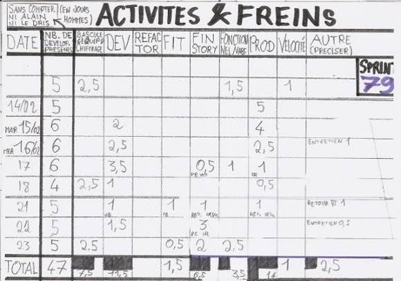
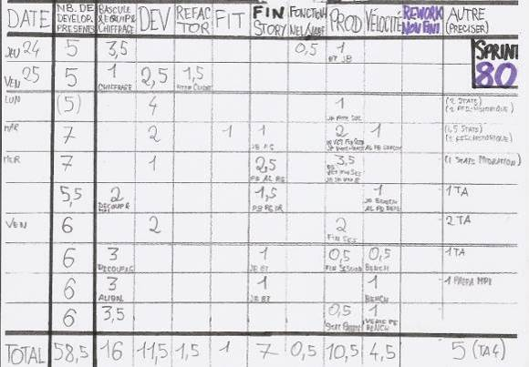
Astuce
Lean :
Préparer un modèle vierge pour assurer une meilleure pertinence
des observations récoltées
Constats :
les tests d’acceptance automatisés ne représentent que 5,5% de
notre temps de travail et le refactoring même pas 2%.
L’hypothèse du ScrumMaster et la mienne étaient donc toutes les
deux fausses.
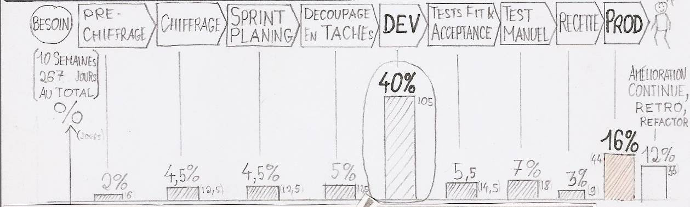
L’élément
qui prend le plus de temps est la programmation, avec 40%. Le
contraire aurait été étonnant dans une équipe de développement.
Mais cela ne fait que déplacer le problème : où passe notre
temps quand nous programmons ?
18.3Troisième expérimentation
Je
lance une troisième expérimentation : l’investigation
pendant le pair-programming.
Pendant
20 demi-journées, le copilote note le temps passé à la minute
près.

Avant
de faire cette expérimentation, nous pensions passer beaucoup de
temps dans la rédaction des tests unitaires. D’ailleurs, des
confrères agilistes nous disent souvent qu’ils passent entre un
tiers et la moitié du temps à écrire des tests. Or, nous
constatons que nous y passons moins de 20% :
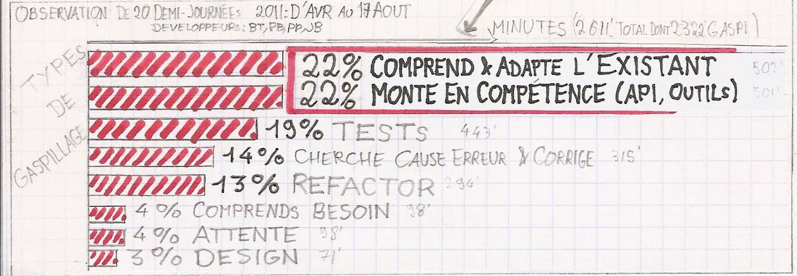
Nous
imaginions également perdre beaucoup de temps à comprendre et
clarifier des spécifications, mais cela ne représente finalement
que 4%.
Champagne !
Nous avons évité de continuer à consacrer des mois et des mois
d’amélioration continue à quatre faux problèmes, mais ce n’est
pas tout. J'ai vu que notre gaspillage le plus conséquent est de
comprendre l'existant. Désormais, quand j'ignore où intervenir pour
réaliser ma tâche, je demande systématiquement par quelle classe
rentrer dans le code existant et cela me permet d’aller deux fois
plus vite.
Qu’avons-nous
fait :
Convertir
une plainte client en un écart quantifié.
Formuler
des hypothèses.
Préparer
des formulaires de collecte de données.
Tester
nos hypothèses avec des mesures.
Le résultat :
J’ai obtenu des données factuelles sur où passe le temps de
l’équipe.
Mon équipe a économisé une énergie colossale en évitant
d’investir sur des fausses pistes.
Ce que j’ai appris :
J’ai
appris un geste qui accélère ma vitesse de développement.
J’ai
appris une méthode pour identifier un potentiel d’accélération.
19Principes lean
19.1Aux origines
Le père du lean est convaincu que chacun est rempli d’impressions,
de préjugés, d’opinions, qui sont autant d’idées fausses. Il
utilise une méthode d’apprentissage venue des Etats-Unis pour les
éliminer, une sorte de TDD (Test-Driven Development) pour
lutter contre les bugs qui limitent nos raisonnements : le
Plan-Do-Check-Act ou PDCA.
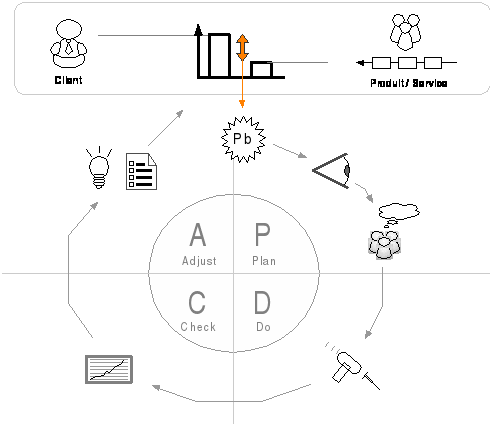
Comme le système mental de chacun est différent, l’apprentissage
ne peut être qu’individuel. Un cycle Plan-Do-Check-Act est donc
porté par une personne et une seule. Le collectif est quand même
présent, mais d'une manière différente de l'agilité : le
porteur va voir une par une les personnes impliquées sur leur
terrain pour mieux comprendre ce qui se passe. Il présente ses
raisonnements pour obtenir des feed backs. Dans l’exemple « La
mise en production qui ne devait pas échouer », c’est un
seul développeur qui éclaircit le problème en allant voir les
gens. L’exercice est donc individuel mais pas solitaire.
Plutôt que de s’enliser dans un débat stérile qui nait d’opinion
comme « Jean est un très bon ingénieur système, il n’aurait
pas modifié ce script sans le tester » ou de généralité
comme « le client n’est jamais clair dans sa tête »,
le praticien du lean est avide de faits : combien de fois le
client n’a-t-il pas été clair ? Allons voir l’ingénieur
système pour savoir ce qui s’est effectivement passé.
19.2Qu'est-ce que le Plan-Do-Check-Act apporte à une équipe agile ?
Le lean fournit donc une méthode pour affronter
des problèmes complexes comme :
ceux qui reviennent nous hanter et que nous n'arrivons pas vraiment
à résoudre définitivement. Dans l'exemple « Du rififi dans
mes sprints », les développeurs dépassent la correction
rustine et font disparaître toute une classe de problèmes avant
même qu'ils ne surviennent.
Des problèmes qui sortent de la zone de contrôle de l'équipe.
Dans l'exemple « La mise en production qui ne devait pas
échouer », le développeur trouve la force de traverser les
barrières entre production et développement pour creuser jusqu'au
coeur de l'incident.
Le problème est présenté au manager d'une manière tellement
factuelle qu'aucune trace de rancœur n'y subsiste.
Un développeur peut remettre en cause une pratique de développement
contre-productive sans heurter ses coéquipiers.
Toute l’équipe a le cœur net sur ce qui se passe vraiment sur le
terrain comme dans « La mise en production qui ne devait pas
échouer » où elle se rend compte que les modifications des
scripts de monitoring ne sont pas testées.
Enfin, le Plan-Do-Check-Act évite d’investir sur des fausses
pistes.
19.3Comment faire en pratique ?
A chaque pas d’un Plan-Do-Check-Act, la méthode
préconise que le porteur présente ce qu’il a compris à un expert
du sujet et à des acteurs du problème, pour détecter d’éventuelles
idées fausses.
19.3.1Plan
19.3.1.1Définir le problème
Dans l’exemple « Joue-la courte et
précise », le client se plaint d’une dérive des délais. Le
membre de l’équipe pense qu’il surestime cette dérive. Le lean
transforme cette affirmation en un problème en le visualisant sous
la forme d’un écart quantifié entre une attente et un constat. Le
porteur se rend compte que les délais sont généralement deux fois
plus longs que le client ne le souhaiterait dans le cas des grosses
épiques :
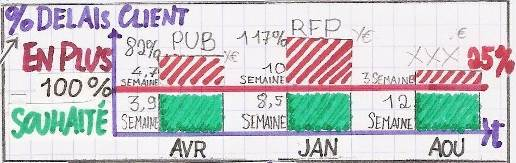
19.3.1.2Qualifier l’impact
Comment juger si le problème mérite l’énergie
que le porteur va lui consacrer ? Un bon problème aura un
impact significatif pour le client ou l’entreprise (financièrement
ou en terme de stratégie).
19.3.1.3Comprendre la situation
Pour contrer les croyances erronées, le porteur observe, compte,
examine des instances du problème. Cette pratique s’appelle le
Go&See ou « aller sur le gemba ».
Elle répond aux questions « A quelle étape, à quel endroit,
le problème survient-il ? » et « Quel est le
potentiel d’amélioration ? ».
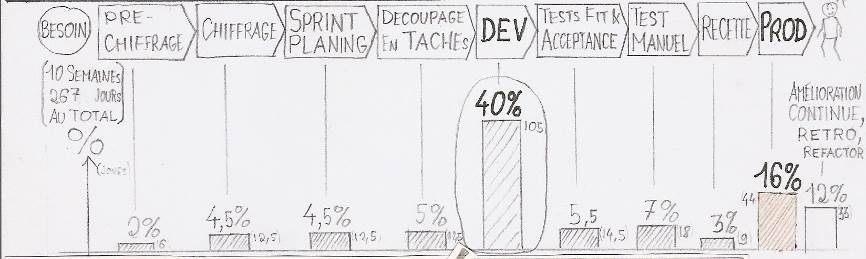
Pour aider à voir le potentiel d’amélioration, le lean met à
disposition des outils, qui sont autant de grilles de lecture pour
affuter le regard. Le plus connu de ces outils conceptuels est la
notion des 7 gaspillages,
c’est-à-dire 7 façons différentes de gaspiller le temps précieux
d’une personne. Le tableau ci-dessous donne quelques exemples de
ces familles dans le contexte du projet de développement agile.
|
Type de gaspillage
|
Exemples
|
|
Corrections & retouches
|
Investigation et correction d’un défaut.
Refactoring exactement inverse à celui fait par un autre
binôme.
|
|
Attente
|
Attente de la disponibilité de l’environnement de test.
Attente du résultat du build.
Lenteur du poste de travail.
|
|
Etapes inutiles
|
Deux binômes qui réalisent des taches qui se chevauchent.
Réaliser une tâche inutile.
Effectuer un travail inefficace.
|
|
Stock
|
Maintenance d’un backlog de User Stories non
développées.
Revoir régulièrement les post-it sur un poster « Idées
d’amélioration ».
|
|
Gestes inutiles
|
Navigation dans le code.
Redémarrage de l’environnement de développement (IDE).
|
|
Transport
|
Report entre branches d’un gestionnaire de configuration.
Transmettre des informations d’un développeur à l’autre.
|
|
Surproduction
|
Ecrire du code qui n’est jamais utilisé.
Réaliser une User Story plus tôt que nécessaire.
|
19.3.1.4Trouver
les causes racines
Le porteur va jusqu’à la cause racine. Dans l’exemple « Du
rififi dans mes sprints », poser plusieurs fois la question
« pourquoi » amène à découvrir une erreur dans la
procédure d’installation de tous les serveurs.
Dans le folklore lean, cette pratique est désignée par le terme « 5
pourquoi ». La consigne littérale est de se poser cinq fois
d’affilée la question « pourquoi ». Cependant, le
chiffre 5 est une invitation à creuser plus que d’habitude, et non
pas une règle. Il faut aussi se méfier de réponses qui
s’écarteraient des faits pour tendre vers des accusations.
Les enchaînements cause-conséquence peuvent être représentés
sous forme d’arbre.
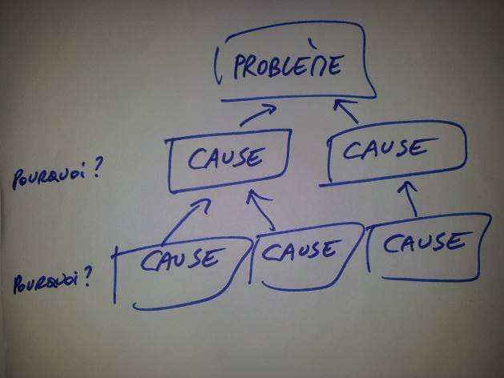
Des hypothèses sont ainsi formulées et testées. Dans
l’exemple « Joue-la courte et précise », la croyance
« une équipe extreme programming passe la moitié de son temps
à écrire des tests » est invalidée.
19.3.1.5Formuler puis choisir des contre-mesures
Une fois les causes bien comprises, le porteur fait un exercice de
pensée divergente : il imagine un maximum de contre-mesures
pour adresser les différentes causes. Le lean privilégie les
contre-mesures ingénieuses, économes et dont l’effet peut être
vérifié rapidement.
L’exemple « La mise en production qui ne devait pas échouer »
illustre cet état d’esprit de l’amélioration continue. Le
développeur aurait pu dire « c’est inadmissible ce que
fait l’équipe système, à eux de s’améliorer en
réalignant pré-production et production, en testant les scripts
d’installation ». Pourtant, il choisit coûte que coûte
d’apporter une petite contribution. Il réussit ainsi sa journée à
double titre : en rétablissant le système le matin et en
améliorant le feedback de l’application le soir.
19.3.1.6Formuler la méthode de Check
Le porteur explique comment il va vérifier
factuellement si sa contre-mesure fonctionne.
19.3.2Do
La phase Do correspond à la mise en œuvre de la
contre-mesure choisie.
19.3.3Check
Le Check est la vérification factuelle de
l’impact de la contre-mesure, comme prévu durant le Plan. Un Check
peut être soit OK, si les objectifs visés sont atteints. Sinon il
est KO.
Dans l’exemple « Du rififi dans mes
sprints », l’équipe mesure une diminution de 37% des
incidents. Son Check est OK.
19.3.4Act
Durant la phase Act, le porteur pérennise les
enseignements qu’il tire de ses expérimentations. Dans l’exemple
précédent, l’équipe corrige la procédure d’installation de
ses serveurs.
Que le Check soit OK ou KO, il y a toujours
quelque chose à apprendre d’une expérimentation bien menée. Le
plus beau succès est de pouvoir se dire « J’étais persuadé
de X, en fait, j’avais tort ! ».
20Premiers pas
La résolution de problème est une technique puissante mais à
manier avec précaution. C'est pourquoi nous vous invitons à suivre
scrupuleusement les 7 étapes qui suivent.
Choisir un sujet
Choisissez un sujet qui est important pour vous. Posez-vous la
question de la dernière difficulté majeure que vous avez rencontrée
ou du problème qui revient le plus souvent.
Formuler le problème
Formulez-le sous forme d'écart entre :
ce que vous constatez
ce que vous voudriez à la place.
Identifier l'impact
Répondez à la question : Pourquoi est-ce important ?
Vérifiez qu'il y a un impact significatif pour le client ou pour
l'entreprise. (cf. chapitre « De Satisfaire le client à
Comprendre le client »).
Définir l'écart au standard
Quand ce problème se manifeste, qu'est-ce que
vous observez ?
Chercher les causes racines
Qu'est-ce qui provoque ce problème ?
Énumérez toutes les hypothèses qui vous semblent plausibles.
L'important est de trouver des hypothèses
testables.
Vérifier les hypothèses
Trouvez le moyen le plus simple et rapide de
confirmer vos hypothèses.
Définir le résultat attendu
Avant d'entreprendre les actions correctives,
définissez où, quand et comment vous pourrez vérifier qu'elles
auront porté leurs fruits.
21Aller plus loin
21.1Toyota Kata
Mike Rother – Edition McGraw-Hill

21.2Managing to learn
John Shook – Edition Lean Enterprise Institute, Inc.
21.3Understanding A3 thinking
Durward K. Sobek II., Art Smalley – Edition Productivity Press

Conclusion
Le lean est une pratique. La valeur de ce guide réside dans les
« premiers pas », les exercices que nous avons
sélectionnés pour vous. Commencez à les mettre en œuvre dès
maintenant, pas après pas, et venez partager vos déclics et vos
questions avec les autres praticiens pour que nous progressions tous
ensemble :
http://www.leanagilecamp.fr
22Livres de référence
22.1Le management lean
Michael Ballé, Godefroy Beauvallet – Edition Pearson
22.2La pratique du lean management dans l’IT
Marie-Pia Ignace, Christian Ignace, Régis Medina et Antoine Contal –
Edition Pearson
23Ressources de référence